本文主要纪念 Vamei 博主，愿天堂也可以科学养猪！
互联网的目的是为了实现通信，而通信的基础是有一套行之有效的网络协议。正如我们在交谈的时候需要符合一定的语法和用语规范一样，机器之间的通话也必须符合协议。否则，每一台机器自言自语，永远也无法相互理解。“协议森林” 是一系列关于网络协议的文章。希望通过这些文章，能对错综复杂的协议森林进行一个简单的总结。
网络协议是技术，但又关乎设计与历史。Ethernet, IP, UDP, TCP, HTTP, DNS… 这些协议像是一片茂密的树林，盘根错节。协议之间相互关联。协议与协议有时合作，有时竞争，有时是弱肉强食的替代。网络协议的发展总是伴随着很有趣的历史故事，网络协议的产生都有其历史环境。一些网络协议可能看起来很笨拙，但放在当时，是聪明的解决方案。所以，在了解网络协议的时候，需要了解该协议的诞生过程和设计目的。
了解网络分层，是理解这个森林的第一步。而森林的心脏，是存在了三十多年的 TCP/IP 套装协议。在变化迅捷的 IT 领域，TCP/IP 坚如磐石的地位可以算是一个奇迹。这一点也是可以理解的。许多单机技术可以很快更新，比如 Java 和 C++ 兴起，而 Pascal 语言、Fortran 语言快速没落。然而，网络协议的更换并不简单，这要求整个网络的所有设备的配合。网络协议是不老传说，它的相关技术，就非常值得拥有。
网络协议可以参考许多经典书籍。“协议森林” 忽略了许多细节，并采用比较直白的表达方式。

1. 综述
1.1 邮差与邮局 (网络协议概观)
信号的传输总要符合一定的协议 (protocol)。比如说长城上放狼烟，看到狼烟的军队开始警备。这是因为人们已经预先约定好，狼烟这个物理信号代表了“敌人入侵”。这样一个 “狼烟=敌人入侵” 就是一个简单的协议。协议可以更复杂，比如摩尔斯码 (Morse Code)，使用短信号和长信号的组合，来代表不同的英文字母。比如 SOS(+++—+++, +代表短信号，-代表长信号)。这样 “+++ 相当于 S, — 相当于 O” 就是摩尔斯码规定的协议。然而更进一层，人们会知道 SOS 是求助信息，原因是我们有 “SOS=求救” 这个协议存在在脑海里。所以 “+++—+++=SOS=求救” 是一个由两个协议组成的分层通信系统。

和人与人之间的通信类似，计算机之间的通信也要遵循协议。
- [1] 物理层(physical layer)
所谓的物理层，是指光纤、电缆或者电磁波等真实存在的物理媒介。这些媒介可以传送物理信号，比如亮度、电压或者振幅。对于数字应用来说，我们只需要两种物理信号来分别表示 0 和 1，比如用高电压表示 1，低电压表示 0，就构成了简单的物理层协议。针对某种媒介，电脑可以有相应的接口，用来接收物理信号，并解读成为 0/1 序列。
- [2] 连接层(link layer)
在连接层(link layer)，信息以帧(frame)为单位传输。信息是一段有序的 0/1 序列，而帧，是这个序列中符合特定格式的一小段。连接层协议的功能就是识别 0/1 序列中所包含的帧。在帧中，有收信地址(Source, SRC)和送信地址(Destination, DST)，还有能够探测错误的校验序列(Frame Check Sequence)。当然，帧中最重要的最重要是所要传输的数据(payload)。这些数据往往符合更高层协议，供网络的上层使用。与数据相配套，帧中也有数据的类型(Type)信息。连接层协议不关心数据中到底包含什么。帧就像是一个信封，把数据包裹起来。
以太网(Ethernet)和 WiFi 是现在最常见的连接层协议。通过连接层协议，我们可以建立局域的以太网或者 WiFi 局域网，并让同一局域网中的两台计算机通信。连接层就像是一个社区的邮差，他认识社区中的每一户人。社区中的每个人都可以将一封信(帧)交给他，让他送给同一社区的另一户人家。

- [3] 网络层(network layer)
连接层让社区内部可以通信，但不同的社区之间该如何通信呢？比如说，让 WiFi 上网络上的一台计算机和以太网上的另一台计算机通信。我们需要一个 “中间人”。这个 “中间人” 必须有以下功能:
- 能从物理层上在两个网络的接收和发送
0/1序列 - 能同时理解两种网络的帧格式
路由器(router)就是为此而产生的 “中间人”。一个路由器有多个网卡(NIC)。每个网卡可以接入到一个网络，并理解相应的连接层协议。在帧经过路由到达另一个网络的时候，路由会读取帧的信息，并改写以发送到另一个网络。所以路由器就像是在两个社区都有分支的邮局。一个社区的邮差将信送到本社区的邮局分支，而邮局会通过自己在另一个地区的分支将信转交给另一个社区的邮差手中，并由另一个社区的邮差最终送到目的地。

整个通信过程如下:
> WiFi上的计算机1 -> 路由WiFi接口 -> 路由以太网接口 -> 以太网上的计算机2在连接层，一个帧中只能记录起点 SRC 和终点 DST 两个地址。而上面的过程需要经过四个地址(计算机 1，WiFi 接口，以太网接口，计算机 2)。显然，仅仅靠连接层协议无法满足我们的需要。由于连接层协议开发在先，我们无法改动连接层协议，只能在连接层的数据(payload)，也就是信纸内部下功夫了。由此，IP 协议应运而生。
计算机 1，路由器和计算机 2 都要懂得 IP 协议。当计算机 1 写信的时候，会在信纸的开头写上这封信的出发地址和最终到达地址(注意，这里是信纸，而不是在信封上)，信封上写要送往的邮局。WiFi 网的邮差将信送往邮局。在邮局，信被打开，邮局工作人员看到最终地址，于是将信包装在一个新的信封中，写上出发地为邮局，到达地为计算机 2，并交给以太网的邮差，由以太网的邮差送往计算机 2。
(IP 协议还要求写如诸如校验等信息，交通状况等信息，以保护通信的稳定性。)

在连接层，邮差只负责在本社区送信，所以信封上的地址总是“第一条街第三座房子”，或者说“中心十字路口拐角的小房子”这样一些本地人才了解的地址描述，这给邮局的工作带来不便。所以邮局要求，信纸上写的地址必须是一个符合官方规定的“邮编”，也就是 IP 地址。这个地址为世界上的每一个房子编号(邮编)。当信件送到邮局的时候，邮局根据邮编，就能查到对应的地址描述，从而能顺利改写信封上的信息。
每个邮局一般连接多个社区，而一个社区也可以有多个邮局，分别通往不同的社区。有时候一封信要通过多个邮局转交，才能最终到达目的地，这个过程叫做路由(routing)。邮局将分离的局域网络连接成了互联，并最终构成了覆盖全球的互联网。
- [4] 传输层(transport layer)
上面的三层协议让不同的计算机之间可以通信。但计算机中可能运行了许多个进程，每个进程都可能有自己的通信需求。比如我们打开 firefox 浏览网页，与此同时，又用 outlook 来接收邮件。一个计算机里的多个进程就像是住在一所房子里住的好几个人，
我们之前的通信协议，足以让我们把信息从一所房子发送到另一所方法。但如何将信精确的送到某个人手里呢？遵照之前相同的逻辑，我们需要在信上增加新的信息，比如收信人的姓名，才可能让信送到。所以，传输层就是在信纸的空白上写上新的“收信人”信息。每一所房子会配备一个管理员(传输层协议)。管理员从邮差手中接过信，会根据“收信人”，将信送给房子中的某个人。

传输层协议，比如 TCP 和 UDP，使用端口号(port number)来识别收信人(某个进程)。在写信的时候，我们写上目的地的端口。当信到达目的地的管理员手中，他会根据传输层协议，识别端口号，将信送给不同的人。
TCP 和 UDP 协议是两种不同的传输层协议。UDP 协议类似于我们的信件交流过程。TCP 协议则好像两个情人间的频繁通信。一个小情人要表达的感情太多，以致于连续写了好几封信。而另一方必须将这些信按顺序排列起来，才能看明白全部的意思。TCP 协议还有控制网络交通等功能。
- [5] 应用层(application layer)
通过上面的几层协议，我们已经可以在任意两个人(进程)之间进行通信。但人们显然还不满足。每个人从事的是不同的行业。有的人是律师，有的人外交官。律师之间的通信，要严格的律师术语，以免产生纠纷。外交官之间的通信，必须符合一定的外交格式，以免发生外交误会。再比如间谍通过暗号来传递加密信息。应用层协议是对信件内容进一步的用语规范。应用层的协议包括用于 Web 浏览的 HTTP 协议，用于传输文件的 FTP 协议，用于 Email 的 IMAP 等等。

- [6] 总结陈述
总过网络分层，我们从原始的 0/1 序列抽象出
> 本地地址(邮差)、邮编(邮局)、收信人(管理员)、收信人行业(用语规范)这些概念。这些概念最终允许互联网上的分布于两台计算机的两个进程相互通信。写信人必须按照各层的协议，封装(encapsulation)好整个信封；而收信人则按照相反的顺序，来拆开这个信封。整个过程是 可读信息 -> 二进制 -> 可读信息。
计算机只能理解和传输 0/1 序列，而计算机的用户则总是输入和输出可读信息。网络协议保证了可读信息在整个转换和传输过程中的完整性。计算机协议本身还有更多的细节需要深入。这篇文章只是从分层的角度描述各个层次所实现的功能。
2. 连接层协议
2.1 小喇叭开始广播 (以太网与 WiFi 协议)
“小喇叭开始广播啦”，如果你知道这个，你一定是老一辈的人。“小喇叭”是五十年代到八十年代的儿童广播节目。在节目一开始，都会有一段这样的播音：“小朋友，小喇叭开始广播了！”。听到这里，收音机前的小朋友就兴奋起来，准备好听节目了：这一期的内容是以太网(Ethernet)协议与 WiFi。
我们在邮差与邮局中说到，以太网和 WiFi 是连接层的两种协议。在连接层，信息的传输单位称为帧(frame)。数据(payload)是包裹在帧中的一部分，帧上注明收信地址和送信地址。连接层实现了“本地社区”的通信。
- [1] 以太网的帧格式
帧本身是一段有限的 0/1 序列。它可以分为头部、数据(Payload)和尾部三部分组成，帧按照下面的顺序从头到尾依次被发送/接收。我们下面进一步解释各个区域。
| 1 | 2 | 3 | 4 | 5 | 6 | 7 | 8 | 9 |
|---|---|---|---|---|---|---|---|---|
| Preamble | SFD | DST | SRC | Type | Payload(Data) | Pad | FCS | Extension |
- [1.1] 头部
帧的最初 7 个字节被称为序言(preamble)。它的每个字节都是 0xAA(这里是十六进制，也就是二进制的10101010)。通常，我们都会预定好以一定的频率发送 0/1 序列(比如每秒10bit)。如果接收设备以其他频率接收(比如每秒5bit)，那么就会错漏掉应该接收的 0/1 信息。但是，由于网卡的不同，发送方和接收方即使预订的频率相同，两者也可能由于物理原因发生偏差。这就好像两个人约好的 10 点见，结果一个人表快，一个人表慢一样。序言是为了让接收设备调整接收频率，以便与发送设备的频率一致，这个过程就叫做时钟复原(recover the clock)。
就像在收听广播之前，调整转钮，直到声音清晰。网卡会在接收序言的过程中不断微调自己的接收频率，直到自己 “听到” 是 ...1010...。时钟调整好之后，我们等待帧的起始信号(SFD, start frame delimiter)。SFD 是固定的值 0xAB。这个 0xAB 就好像“小喇叭开始广播啦”一样，提醒我们好节目就要上演了。

紧随 SFD 之后的是 6 字节的目的地(DST, destination)和 6 字节的发出地(SRC, source)。这就是我们在邮差和邮局中的介绍一样，为信封写上目的地和发出地。要注意，这里写在信封上的是对地址的“本地描述”，也就是 MAC 地址。MAC 地址是物理设备自带的序号，只能在同一个以太网中被识别。也就是说，邮差只熟悉自己的社区。
头部的最后一个区域是 Type，用以说明数据部分的类型。比如 0x0800 为 IPv4，而 0x0806 为 ARP。
- [1.2] 数据
数据一般包含有符合更高层协议的数据，比如 IP 包。连接层协议本身并不在乎数据是什么，它只负责传输。注意，数据尾部可能填充有一串 0(PAD 区域)。填充 0 的原因是，一个帧需要超过一定的最小长度。
- [1.3] 尾部
跟随在数据之后的是校验序列(FCS)。校验序列是为了检验数据的传输是否发生错误。在物理层，我们通过一些物理信号来表示 0/1 序列(比如高压/低压，高频率/低频率等)，但这些物理信号可能在传输过程中受到影响，以致于发生错误。如何来发现我们的数据是正确的呢？
一个方法是将数据发送两遍，然后对比一下是否一样。但这样就大大降低了网络的效率。FCS 采用了循环冗余校验(CRC)算法。这就好像是一家饭店的老板雇佣了一个收银员，但他又担心收银员黑钱。可是每天营业额很大，老板即使坐在旁边看，也不能用记住收到的总数。所以他采取了一个聪明的办法：只记住收到钱的最后一位(比如收到 19 元，老板记住 9)。当有新的进账(比如 13，尾数为 3)，他就将新的尾数和旧的尾数相加，再记住和的尾数(也就是 2)。当收银员交给老板钱的时候，老板只用看总额的最后一位是否和自己记的最后一位相同，就可以知道收银员是否诚实了。如果说我们的数据是收银的总额的话，我们的 FCS 就是老板记录的尾数。如果两者不相符，我们就知道数据在传输的过程中出现错误，不能使用。

上面的比喻实际上是用营业总额不断的除以 10，获得最终的尾数。CRC 算法也相类似。n 位 CRC 算法取一个 n bit 的因子，比如下面的 1011。数据序列结尾增加 n-1 个 0。因子与数据序列的不断进行 XOR 运算，直到得到 n-1 位的余数，也就是 100。该余数各位取反(011)，然后存储在 FCS 的位置。
下面例子用的是 4 位 CRC。在 Ethernet 中使用的因子为 32 位的，以达到更好的检测效果。
11010011101100 000 <--- 数据序列末尾增加3位0
1011 <--- 因子
01100011101100 000 <--- XOR结果
1011 <--- 因子
00111011101100 000
1011
00010111101100 000
1011
00000001101100 000
1011
00000000110100 000
1011
00000000011000 000
1011
00000000001110 000
1011
00000000000101 000
101 1
-----------------
00000000000000 100 <--- 3位余数- [2] 集线器
(Hub)vs. 交换器(Switch)
以太网使用集线器或者交换器将帧从发出地传送到目的地。一台集线器或交换器上有多个端口，每个端口都可以连接一台计算机或其他设备。
集线器像一个广播电台。一台电脑将帧发送到集线器，集线器会将帧转发到所有其他的端口。每台计算机检查自己的 MAC 地址是不是符合 DST。如果不是，则保持沉默。集线器是比较早期的以太网设备。它有明显的缺陷：
- 任意两台电脑的通信在同一个以太网上是公开的。所有连接在同一个集线器上的设备都能收听到别人在传输什么，这样很不安全。可以通过对信息加密提高安全性。
- 不允许多路同时通信。如果两台电脑同时向集线器发信，集线器会向所有设备发出“冲突”信息，提醒发生冲突。可以在设备上增加冲突检测算法(
collision detection)：一旦设备发现有冲突，则随机等待一段时间再重新发送。
交换器克服集线器的缺陷。交换器记录有各个设备的 MAC 地址。当帧发送到交换器时，交换器会检查 DST，然后将帧只发送到对应端口。交换器允许多路同时通信。由于交换器的优越性，交换器基本上取代了集线器。但比较老的以太网还有可能在使用集线器。
- [3] WiFi
WiFi 的工作方式与集线器连接下的以太网类似。一个 WiFi 设备会向所有的 WiFi 设备发送帧，其它的 WiFi 设备检查自己是否符合 DST。由于 WiFi 采取无线电信号，所以很难像交换器一样定向发送，所以 WiFi 的安全性很值得关注。WiFi 采用加密的方法来实现信息的安全性。早期的 WEP 加密方法非常脆弱，建议使用 WPA 或者 WPA2 加密方法。隐藏 WiFi 设备 ID 的方法不是很有用
- [4] 总结陈述
我们深入了连接层协议的一些细节。连接层是物理与逻辑的接口，它的设计兼顾了物理需求(比如时钟复原，CRC)和逻辑需求(比如地址、数据)。由于连接层处于网络逻辑的底层，有许多基于连接层的攻击手法，这需要我们对连接层的工作方式有一定的了解，以设计出更好的网络安全策略。
3. 网络层协议
3.1 IP 接力赛 (IP, ARP, RIP 和 BGP 协议)
网络层(network layer)是实现互联网最重要的一层。正是在网络层面上，各个局域网根据 IP 协议相互连接，最终构成覆盖全球的 Internet。更高层的协议，无论是 TCP 还是 UDP，必须通过网络层的 IP 数据包(datagram)来传递信息。操作系统也会提供该层面的套接字(socket)，从而允许用户直接操作 IP 包。
IP 数据包简称为 IP 包。它是符合 IP 协议的 0/1 序列。信息包含在这一序列中。IP 包分为头部(header)和数据(Data)两部分。数据部分是要传送的信息，头部是为了能够实现传输而附加的信息。这与以太网帧的头部功能相类似，如果对帧感到陌生，可参看小喇叭一文。
- [1]
IP包的格式
IP 协议可以分为 IPv4 和 IPv6 两种。IPv6 是改进版本，用于在未来取代 IPv4 协议。我们可以暂时忽略两者的区别，只以 IPv4 为例。下面是 IPv4 的格式。我们按照 4 bytes 为单位，将整个序列折叠，以便更好的显示。
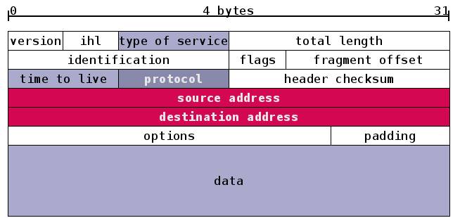
与帧类似，IP 包的头部也有多个区域。我们将注意力放在红色的发出地和目的地。它们都是 IP 地址。IPv4 的地址为 4 bytes 的长度(也就是 32 位)。我们通常将 IPv4 的地址分为四个十进制的数，每个数的范围为 0-255，比如 192.0.0.1 就是一个 IP 地址。填写在 IP 包头部的是该地址的二进制形式。
IP 地址是全球地址，它可以识别”社区”(局域网)和”房子”(主机)。这是通过将 IP 地址分类实现的。每个 IP 地址的 32 位分为前后两部分，第一部分用来区分局域网，第二个部分用来区分该局域网的主机。子网掩码(Subnet Mask)告诉我们这两部分的分界线，比如 255.0.0.0(也就是 8 个 1 和 24 个 0)表示前 8 位用于区分局域网，后 24 位用于区分主机。由于 A、B、C 分类是已经规定好的，所以当一个 IP 地址属于 B 类范围时，我们就知道它的前 16 位和后 16 位分别表示局域网和主机。
IP class |
From | To | Subnet Mask |
|---|---|---|---|
| A | 1.0.0.0 | 126.255.255.255 | 255.0.0.0 |
| B | 128.0.0.0 | 191.255.255.255 | 255.255.0.0 |
| C | 192.0.0.0 | 223.255.255.255 | 255.255.255.0 |
- [2] 网卡与路由器
邮差与邮局中说，IP 地址是分配给每个房子(计算机)的”邮编”。但这个说法并不精确。IP 地址实际上识别的是网卡。网卡是计算机的一个硬件，它在接收到网路信息之后，将信息交给计算机的 CPU 处理。当计算机需要发送信息的时，也要通过网卡发送。一台计算机可以有不只一个网卡，比如笔记本就有一个以太网卡和一个 WiFi 网卡。计算机在接收或者发送信息的时候，要先决定想要通过哪个网卡。
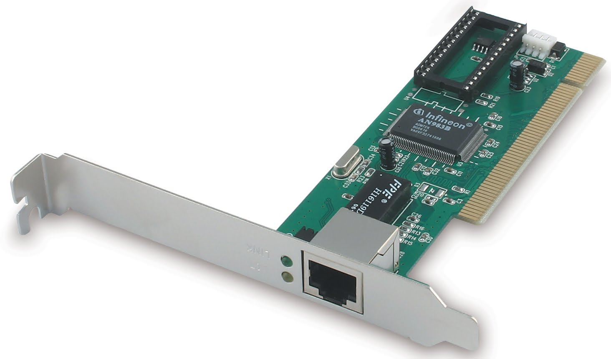
路由器(router)实际上就是一台配备有多个网卡的专用电脑。它让网卡接入到不同的网络中，这样，就构成在邮差与邮局中所说的邮局。比如下图中位于中间位置的路由器有两个网卡，地址分别为 199.165.145.17 和 199.165.146.3。它们分别接入到两个网络：199.165.145 和 199.165.146。
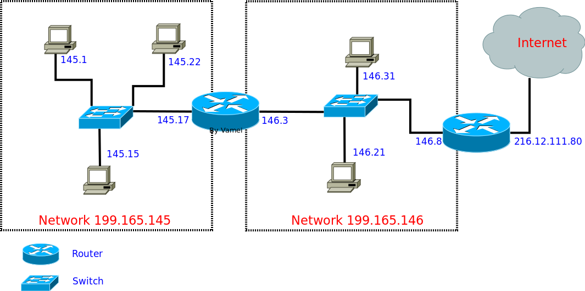
- [3]
IP包接力
IP 包的传输要通过路由器的接力。每一个主机和路由中都存有一个路由表(routing table)。路由表根据目的地的 IP 地址，规定了等待发送的 IP 包所应该走的路线。就好像下图的路标，如果地址是“东京”，那么请转左；如果地址是“悉尼”，那么请向右。
比如我们从主机 145.17 生成发送到 146.21 的 IP 包：铺开信纸，写好信的开头。剩下数据部分可以是 TCP 包，可以是 UDP 包，也可以是任意乱写的字，我们暂时不关心。注明目的地 IP 地址(199.165.146.21)和发出地 IP 地址(199.165.145.17)。主机 145.17 随后参照自己的路由表，看到路由表中的记录：
145.17 routing table (Genmask 为子网掩码，Iface 用于说明使用哪个网卡接口)
| Destination | Gateway | Genmask | Iface |
|---|---|---|---|
| 199.165.145.0 | 0.0.0.0 | 255.255.255.0 | eth0 |
| 0.0.0.0 | 199.165.145.17 | 0.0.0.0 | eth0 |
这里有两行记录：
- 第一行，如果
IP目的地是199.165.145.0这个网络的主机，那么只需要自己在eth0上的网卡直接传送(“本地社区”：直接送达)，不需要前往路由器(Gateway 0.0.0.0 = “本地送信”)。 - 第二行，所有不符合第一行的
IP目的地，都应该送往Gateway199.165.145.17，也就是中间路由器接入在eth0的网卡IP地址(邮局在eth0的分支)。
我们的 IP 包目的地为 199.165.146.21，不符合第一行，所以按照第二行，发送到中间的路由器。主机 145.17 会将 IP 包放入帧的 payload，并在帧的头部写上 199.165.145.17 对应的 MAC 地址，这样，就可以按照小喇叭中的方法在局域网中传送了。
中间的路由器在收到 IP 包之后(实际上是收到以太协议的帧，然后从帧中的 payload 读取 IP 包)，提取目的地 IP 地址，然后对照自己的路由表：
| Destination | Gateway | Genmask | Iface |
|---|---|---|---|
| 199.165.145.0 | 0.0.0.0 | 255.255.255.0 | eth0 |
| 199.165.146.0 | 0.0.0.0 | 255.255.255.0 | eth1 |
| 0.0.0.0 | 199.165.146.8 | 0.0.0.0 | eth1 |
从前两行我们看到，由于路由器横跨 eth0 和 eth1 两个网络，它可以直接通过 eth0 和 eth1 上的网卡直接传送 IP 包。第三行表示，如果是前面两行之外的 IP 地址，则需要通过 eth1，送往 199.165.146.8(右边的路由器)。我们的目的地符合第二行，所以将 IP 放入一个新的帧中，在帧的头部写上 199.165.146.21 的 MAC 地址，直接发往主机 146.21。
在 Linux 下，可以使用 route -n 或 ip route 来查看路由表。route 命令基本上是所有 Linux 系统自带的命令，不过现在有更强悍的网络命令集 iproute2。它完全可以替代 ifconfig, route 等命令，比如查看 ip address 和 route table。
$ `IP` addr show enp0s5
2: enp0s5: <BROADCAST,MULTICAST,UP,LOWER_UP> mtu 1500 qdisc pfifo_fast state UP qlen 1000
link/ether 00:1c:42:bd:ea:3d brd ff:ff:ff:ff:ff:ff
inet 10.211.55.6/24 brd 10.211.55.255 scope global enp0s5
inet6 fdb2:2c26:f4e4:0:12c:42ff:fedb:ae3d/64 scope global dynamic
valid_lft 2591961sec preferred_lft 604761sec
inet6 fe80::12c:42ff:fedb:ae3d/64 scope link
valid_lft forever preferred_lft forever$ `IP` route
default via 10.211.55.1 dev enp0s5 metric 2
10.211.55.0/24 dev enp0s5 proto kernel scope link src 10.211.55.6 metric 2
127.0.0.0/8 via 127.0.0.1 dev loIP 包可以进一步接力，到达更远的主机。IP 包从主机出发，根据沿途路由器的路由表指导，在路由器间接力。IP 包最终到达某个路由器，这个路由器与目标主机位于一个局域网中，可以直接建立连接层的通信。最后，IP 包被送到目标主机。这样一个过程叫做 routing(我们就叫 IP 包接力好了，路由这个词实在是混合了太多的意思)。
整个过程中，IP 包不断被主机和路由封装入帧(信封)并拆开，然后借助连接层，在局域网的各个 NIC 之间传送帧。整个过程中，我们的 IP 包的内容保持完整，没有发生变化。最终的效果是一个 IP 包从一个主机传送到另一个主机。利用 IP 包，我们不需要去操心底层(比如连接层)发生了什么。
- [4] ARP 协议
在上面的过程中，我们实际上假设了，每一台主机和路由都能了解局域网内的 IP 地址和 MAC 地址的对应关系，这是实现 IP 包封装(encapsulation)到帧的基本条件。IP 地址与 MAC 地址的对应是通过 ARP 协议传播到局域网的每个主机和路由。每一台主机或路由中都有一个 ARP cache，用以存储局域网内 IP 地址和 MAC 地址如何对应。
ARP 协议介于连接层和网络层之间，ARP 包需要包裹在一个帧中。它的工作方式如下：主机会发出一个 ARP 包，该 ARP 包中包含有自己的 IP 地址和 MAC 地址。通过 ARP 包，主机以广播的形式询问局域网上所有的主机和路由：我是 IP 地址xxxx，我的 MAC 地址是 xxxx，有人知道 199.165.146.4 的 MAC 地址吗？拥有该 IP 地址的主机会回复发出请求的主机：哦，我知道，这个 IP 地址属于我的一个 NIC，它的 MAC 地址是 xxxxxx。由于发送 ARP 请求的主机采取的是广播形式，并附带有自己的 IP 地址和 MAC 地址，其他的主机和路由会同时检查自己的 ARP cache，如果不符合，则更新自己的 ARP cache。
这样，经过几次 ARP 请求之后，ARP cache 会达到稳定。如果局域网上设备发生变动，ARP 重复上面过程。
- [5] 路由表的生成
之前的信息传递基于一个假设：每个人手里都有份准确的地图。用计算机的话来说，就是每个主机和路由上都已经有了合理的路由表。这个路由表描述了网络上的路径信息。如果你了解自己的网络连接，可以手写自己主机的路由表。但是，一个路由器可能有多个出口，所以路由表可能会很长。更重要的是，周围连接的其他路由器可能发生变动(比如新增路由器或者路由器坏掉)，我们就需要路由表能及时将交通导向其他的出口。我们需要一种更加智能的探测周围的网络拓扑结构，并自动生成路由表。
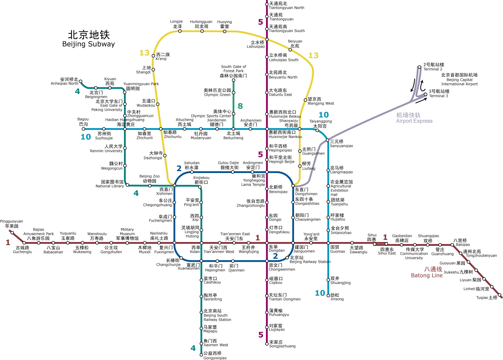
我们以北京地铁为例子。如果从机场前往朝阳门，那么可以采取 2 号航站楼->>三元桥->>东直门->>朝阳门。2 号航站楼和朝阳门分别是出发和目的主机。而三元桥和东直门为中间的两个路由器。如果三元桥->>东直门段因为维修停运，我们需要更改三元桥的路由表，从而给前往朝阳门的乘客(IP 包)指示：请走如下路线三元桥->>芍药居。然后依照芍药居的路由表前往朝阳门(芍药居->>东直门->>朝阳门)。
路由表的生成同样基于网络。一种用来生成路由表的协议是 RIP。它通过“距离”来决定路由表，所以属于 distance-vector protocol。对于 RIP 来说，所谓的“距离”是从出发地到目的地途径的路由器数目(hop number)。
RIP 的基本逻辑是：如果 A 距离 B 为 6，而我距离 A 为 1，那么我途径 A 到 B 的距离为 7。
比如上面从机场到朝阳门，按照
2号航站楼 ->> 三元桥 ->> 东直门 ->> 朝阳门路线途径上有两个路由器，因此从起点到终点的距离为 2。我们最初可以手动生成三元桥的路由表。随后，根据 RIP 协议，三元桥向周围的路由器和主机广播自己前往各个 IP 的距离(比如到机场=0，团结湖=0，国贸=1，望京西=1，建国门=2)。收到 RIP 包的路由器和主机根据 RIP 包和自己到发送 RIP 包的主机的距离，算出自己前往各个 IP 的距离。东直门与三元桥的距离为 1。东直门收到三元桥的 RIP 包(到机场的距离为 0)，那么东直门途径三元桥前往机场的距离为 1+0=1。如果东直门自己的 RIP 记录都比这个远(比如东直门->>芍药居->>三元桥->>机场= 2)。那么东直门更改自己的路由表：前往机场的交通都发往三元桥而不是芍药居。如果东直门自身的 RIP 记录并不差，那么东直门保持路由表不变。在各个点不断重复RIP 广播/计算距离/更新路由表的过程，最终所有的主机和路由器都能生成最合理的路由表。
RIP 出于技术上的原因，认为距离超过 15 的 IP 不可到达。所以 RIP 更多用于互联网的一部分(比如整个中国电信的网络)。这样一个互联网的部分往往属于同一个 ISP 或者有同一个管理机构，所以叫做自治系统。自治系统内部的主机和路由根据通向外部的边界路由器来和其它的自治系统通信。各个边界路由器之间通过 BGP 来生成自己前往其它 AS 的路由表。自治系统内部则参照边界路由器，使用 RIP 来决定路由表。BGP 的基本工作过程与 RIP 类似，但在考虑距离的同时，也权衡比如政策、连接性能等其他因素，再决定交通的走向(路由表)。
- [6] 总结陈述
我们一开始讲述了 IP 包根据路由表进行接力的过程。为了顺利实现接力，我们又进一步深入到 ARP 和 RIP/BGP。这三个协议都协助了 IP 传输。ARP 让每台电脑和路由器知道自己局域网内 IP 地址和 MAC 地址的对应关系，从而顺利实现 IP 包到帧的封装。RIP 协议可以生成自治系统内部合理的路由表。BGP 协议可以生成自治系统外部的路由表。
在整个过程中，我们都将注意力放在了 IP 包大的传输过程中，而故意忽略一些细节。 而上面的 IP 接力过程适用于 IPv6。
3.2 地址耗尽危机 (IPv4 与 IPv6 地址)
IP 地址是 IP 协议的重要组成部分，它可以识别接入互联网中的任意一台设备。在 IP 接力中，我们已经看到，IP 包的头部写有出发地和目的地的 IP 地址。IP 包上携带的 IP 地址和路由器相配合，最终允许 IP 包从互联网的一台电脑传送到另一台。
在 IP 接力中，我们是以 IPv4 为例说明 IP 包的格式的。IPv4 和 IPv6 是先后出现的两个 IP 协议版本。IPv4 的地址就是一个 32 位的 0/1 序列，比如 11000000 00000000 0000000 00000011。为了方便人类记录和阅读，我们通常将 32 位 0/1 分成 4 段 8 位序列，并用 10 进制来表示每一段这样，一段的范围就是 0 到 255。段与段之间以 . 分隔。比如上面的地址可以表示成为 192.0.0.3。IPv6 地址是 128 位 0/1 序列，它也按 8 位分割，以 16 进制来记录每一段。使用 16 进制而不是 10 进制，能让写出来的 IPv6 地址短一些。段与段之间以 : 分隔。
- [1]
IP地址的分配
IP 地址的分配是一个政策性的问题。ICANN是 Internet 的中心管理机构。ICANN 的 IANA部门负责将 IP 地址分配给 5 个区域性的互联网注册机构(RIR)，比如 APNIC，它负责亚太地区的 IP 分配。然后 RIR 将地址进一步分配给当地的 ISP，比如中国电信和中国网通。ISP 再根据自己的情况，将 IP 地址分配给机构或者直接分配给用户，比如将 A 类地址分配给一个超大型机构，而将 C 类地址分配给一个网吧。机构可以进一步在局域网内部分配 IP 地址给各个主机。(A/B/C 类地址请参阅 IP 接力)
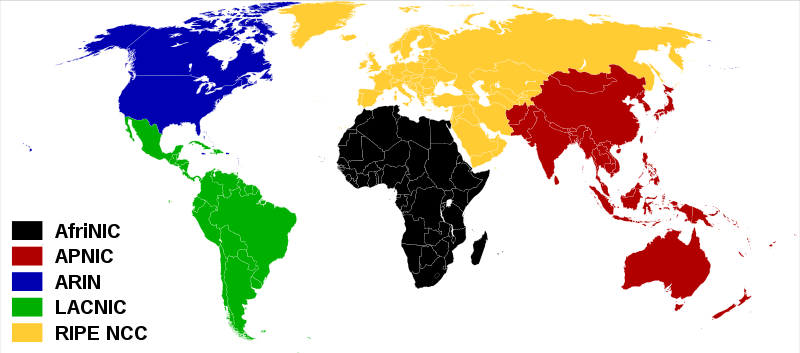
并不是所有的地址都会被分配。一些地址被预留，用于广播、测试、私有网络使用等。这些地址被称为专用地址。你可以查询 RFC5735 来了解哪些地址是专用地址。这个文档是 RFC 文档中的一个。
RFC 是一系列的技术文档，用于记录 Internet 相关的技术和协议规定。每一个 RFC 文件都有一个固定的编号。它们是互联网的一个重要财产。你可以通过 http://www.rfc-editor.org/ 来查找 RFC 文件。
- [2] IPv4 地址耗尽
由于 IPv4 协议的地址为 32 位，所以它可以提供大约 40 亿个地址。如果地球人每人一个 IP 地址的话，IPv4 地址已经远远不够。更何况，人均持有的入网设备可能要远多于一个，下图中显示了一个家庭对 IP 地址的需求，这种需求量已经相当常见了：

下图显示了各大洲 RIR 的 IPv4 地址耗尽日期 (IANA 已经将所有的 IP 分配给各个 RIR)：

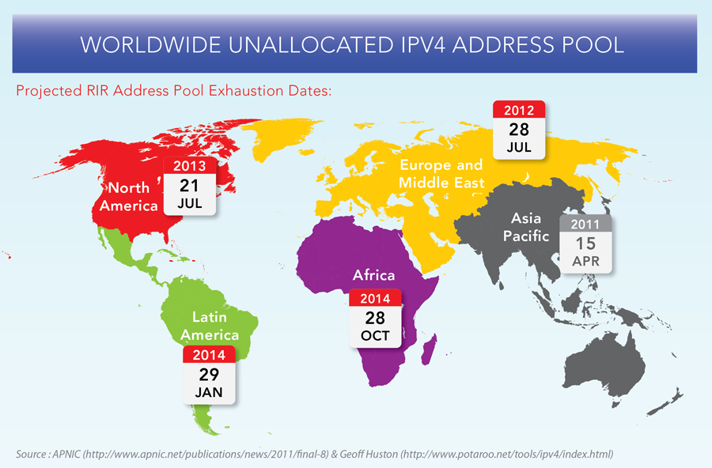
尽管一些技术措施，比如 NAT 技术，可以为更多的网络设备提供地址，从而减缓了情况的紧急程度，但 IPv4 地址耗尽的一天终究还是会很快到来。很明显，我们需要更多的 IP 地址，以满足爆炸式增长的互联网设备对 IP 地址的需求。

- [3] 更长=更好
IPv6 协议的地址最重要的改进就是：加长。IPv6 的地址为 128 位。准确的说，IPv4 有 4,294,967,296 个地址，而 IPv6 有 340,282,366,920,938,463,374,607,431,768,211,456 个地址。这是怎样一个概念呢？我们可以大概计算一下
地球表面积大约为 510,067,866,000,000 平方米。在一平方厘米，也就是大约指甲盖大小的面积内，我们可以有将近 7000 个 IP 地址！所以在短期的时间内，我们应该不会看到 IPv6 被用尽的尴尬(不排除在未来计算机以分子尺寸出现，那么我们就会有 IPv6 耗尽危机了)。IPv6 是解决 IP 地址危机的最终方案。
- [4] 总结陈述
IPv4 地址正在耗尽，而 IPv6 通过更长的序列提供了更多的 IP 地址。IPv4 向 IPv6 的迁移正在发生。阻碍迁移的过程的主要在于 IPv4 和 IPv6 格式的不兼容性。老的路由器支持 IPv4 格式的 IP 包，但它们无法理解 IPv6 格式的 IP 包。所以这一迁移过程必然要伴随者设备的更新。然而，我们的许多互联网资产都是建立在 IPv4 网络上的，不可能一夜之间停止 IPv4 网络的服务而整体迁移到 IPv6 网络中。这一迁移过程注定充满坎坷。
3.3 我尽力 (IP 协议详解)
IP 地址是 IP 协议的重要组成部分，但远非 IP 协议的全部。我们再来看一看 IP 协议的具体细节和设计哲学。
- [1] IPv4 与 IPv6 头部的对比
我们已经在 IP 接力中介绍过，一个 IP 包分为头部(header)和数据(payload/data)两部分。头部是为了实现 IP 通信必须的附加信息，数据是 IP 通信所要传送的信息。

- 黄色区域 (同名区域)
我们看到，三个黄色区域跨越了 IPv4 和 IPv6。Version(4 位)用来表明 IP 协议版本，是 IPv4 还是 IPv6(IPv4, Version=0100; IPv6, Version=0110)。Source Adrresss 和 Destination Address 分别为发出地和目的地的 IP地址。
- 蓝色区域（名字发生变动的区域）
Time to Live 存活时间(Hop Limit in IPv6)。Time to Live 最初是表示一个 IP 包的最大存活时间：如果 IP 包在传输过程中超过 Time to Live，那么 IP 包就作废。后来，IPv4 的这个区域记录一个整数(比如 30)，表示在 IP 包接力过程中最多经过 30 个路由接力，如果超过 30 个路由接力，那么这个 IP 包就作废。IP 包每经过一个路由器，路由器就给 Time to Live 减一。当一个路由器发现 Time to Live 为 0 时，就不再发送该 IP 包。IPv6 中的 Hop Limit 区域记录的也是最大路由接力数，与 IPv4 的功能相同。Time to Live/Hop Limit 避免了 IP 包在互联网中无限接力。
Type of Service 服务类型(Traffic Class in IPv6)。Type of Service 最初是用来给 IP 包分优先级，比如语音通话需要实时性，所以它的 IP 包应该比 Web 服务的 IP 包有更高的优先级。然而，这个最初不错的想法没有被微软采纳。在 Windows 下生成的 IP 包都是相同的最高优先级，所以在当时造成 Linux 和 Windows 混合网络中，Linux 的 IP 传输会慢于 Windows (仅仅是因为 Linux 更加守规矩！)。后来，Type of Service 被实际分为两部分：Differentiated Service Field (DS, 前 6 位)和 Explicit Congestion Notification (ECN, 后 2 位)，前者依然用来区分服务类型，而后者用于表明 IP 包途径路由的交通状况。IPv6 的 Traffic Class 也被如此分成两部分。通过 IP 包提供不同服务的想法，并针对服务进行不同的优化的想法已经产生很久了，但具体做法并没有形成公认的协议。比如 ECN 区域，它用来表示 IP 包经过路径的交通状况。如果接收者收到的 ECN 区域显示路径上的很拥挤，那么接收者应该作出调整。但在实际上，许多接收者都会忽视ECN 所包含的信息。交通状况的控制往往由更高层的比如 TCP 协议实现。
Protocol 协议(Next Header in IPv6)。Protocol 用来说明 IP 包 Payload 部分所遵循的协议，也就是 IP 包之上的协议是什么。它说明了 IP 包封装的是一个怎样的高层协议包(TCP? UDP?)。
Total Length, 以及 IPv6 中 Payload Length 的讨论要和 IHL 区域放在一起，我们即将讨论。
- 红色区域 (IPv6 中删除的区域)
我们看一下 IPv4 和 IPv6 的长度信息。IPv4 头部的长度。在头部的最后，是 options。每个 options 有 32 位，是选填性质的区域。一个 IPv4 头部可以完全没有 options 区域。不考虑 options 的话，整个 IPv4 头部有 20 bytes(上面每行为 4 bytes)。但由于有 options 的存在，整个头部的总长度是变动的。我们用 IHL(Internet Header Length)来记录头部的总长度，用 Total Length 记录整个 IP 包的长度。IPv6 没有 options，它的头部是固定的长度 40 bytes，所以 IPv6 中并不需要 IHL 区域。Payload Length 用来表示 IPv6 的数据部分的长度。整个 IP 包为 40 bytes + Payload Length。
IPv4 中还有一个 Header Checksum 区域。这个 checksum 用于校验 IP 包的头部信息。Checksum 与之前在小喇叭中提到的 CRC 算法并不相同。IPv6 则没有 checksum 区域。IPv6 包的校验依赖高层的协议来完成，这样的好处是免去了执行 checksum 校验所需要的时间，减小了网络延迟 (latency)。
Identification, flags 和 fragment offset，这三个包都是为碎片化(fragmentation)服务的。碎片化是指一个路由器将接收到的 IP 包分拆成多个 IP 包传送，而接收这些“碎片”的路由器或者主机需要将“碎片”重新组合(reassembly)成一个 IP 包。不同的局域网所支持的最大传输单元(MTU, Maximum Transportation Unit)不同。如果一个 IP 包的大小超过了局域网支持的 MTU，就需要在进入该局域网时碎片化传输(就好像方面面面饼太大了，必须掰碎才能放进碗里)。碎片化会给路由器和网络带来很大的负担。最好在 IP 包发出之前探测整个路径上的最小 MTU，IP 包的大小不超过该最小 MTU，就可以避免碎片化。IPv6 在设计上避免碎片化。每一个 IPv6 局域网的 MTU 都必须大于等于 1280 bytes。IPv6 的默认发送 IP 包大小为 1280 bytes。
- 绿色区域 (IPv6 新增区域)
Flow Label 是 IPv6 中新增的区域。它被用来提醒路由器来重复使用之前的接力路径。这样 IP 包可以自动保持出发时的顺序。这对于流媒体之类的应用有帮助。Flow label 的进一步使用还在开发中。
- [2] “我尽力”
IP 协议在产生时是一个松散的网络，这个网络由各个大学的局域网相互连接成的，由一群碰头垢面的 Geek 维护。所以，IP 协议认为自己所处的环境是不可靠(unreliable)的：诸如路由器坏掉、实验室失火、某个 PhD 踢掉电缆之类的事情随时会发生。

这样的凶险环境下，IP 协议提供的传送只能是“我尽力” (best effort)式的。所谓的“我尽力”，其潜台词是，如果事情出错不要怪我，我只是答应了尽力，可没保证什么。所以，如果 IP 包传输过程中出现错误(比如 checksum对不上，比如交通太繁忙，比如超过 Time to Live)，根据 IP 协议，你的 IP 包会直接被丢掉。Game Over, 不会再有进一步的努力来修正错误。Best effort 让 IP 协议保持很简单的形态。更多的质量控制交给高层协议处理，IP 协议只负责有效率的传输。
(多么不负责任的邮递系统)
“效率优先”也体现在 IP 包的顺序(order)上。即使出发地和目的地保持不变，IP 协议也不保证 IP 包到达的先后顺序。我们已经知道，IP 接力是根据 routing table 决定接力路线的。如果在连续的 IP 包发送过程中，routing table 更新(比如有一条新建的捷径出现)，那么后发出的 IP 包选择走不一样的接力路线。如果新的路径传输速度更快，那么后发出的 IP 包有可能先到。这就好像是多车道的公路上，每辆车都在不停变换车道，最终所有的车道都塞满汽车。这样可以让公路利用率达到最大。
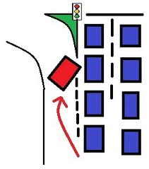
IPv6 中的 Flow Label 可以建议路由器将一些 IP 包保持一样的接力路径。但这只是“建议”，路由器可能会忽略该建议。
- [3] Header Checksum 算法
Header Checksum 区域有 16 位。它是这样获得的，从 header 取得除 checksum 之外的 0/1 序列，比如：
9194 8073 0000 4000 4011 C0A8 0001 C0A8 00C7 (十六进制 hex, 这是一个为演示运算过程而设计的 header)
按照十六位(也就是 4 位 hex)分割整个序列。将分割后的各个 4 位 hex 累积相加。如果有超过 16 位的进位出现，则将进位加到后 16 位结果的最后一位：
Binary Hex
1001000110010100 9194
+ 1000000001110011 8073
----------------
1 0001001000000111 11207
+ 1
----------------
0001001000001000 1208上面的计算叫做 one's complement sum。求得所有十六位数的和，
one's complement sum(4500, 0073, 0000, 4000, 4011, C0A8, 0001, C0A8, 00C7) = 1433
然后，将 1433 的每一位取反(0->1, 1->0)， 就得到 checksum：EBCC。这样，我们的 header 就是:
9194 8073 0000 4000 4011 EBCC C0A8 0001 C0A8 00C7IP 包的接收方在接收到 IP 包之后，可以求上面各个 16 位数的 one's complement sum，应该得到 FFFF。如果不是 FFFF，那么 header 是不正确的，整个 IP 包会被丢弃。再次提醒，示例所用的 IP header 不是真实的 header，它只是起演示算法的作用。
- [4] 总结陈述
每个网络协议的形成都有其历史原因。比如 IP 协议是为了将各个分散的实验室网络连接起来。由于当时的网络很小，所以 IPv4(IPv4 产生与 70 年代)的地址总量为 40 亿。尽管当时被认为是很大的数字，但数字浪潮很快带来了地址耗尽危机。IPv6 的主要目的是增加 IPv4 的地址容量，但同时根据 IPv4 的经验和新时代的技术进步进行改进，比如避免碎片化，比如取消 checksum (由于高层协议 TCP 的广泛使用)。网络协议技术上并不复杂，更多的考量是政策性的。
IP 协议是“Best Effort”式的，IP 传输是不可靠的。但这样的设计成就了 IP 协议的效率。
3.4 瑞士军刀 (ICMP 协议)
到现在为止，我们讲解了网络层中最重要的 IP 协议(参考协议森林)。IP 协议的一个重要补充是是 ICMP 协议。
- [1] ICMP 协议
ICMP(Internet Control Message Protocol)是介于网络层和传输层的协议。它的主要功能是传输网络诊断信息。
ICMP 传输的信息可以分为两类，一类是错误(error)信息，这一类信息可用来诊断网络故障。我们已经知道，IP 协议的工作方式是“Best Effort”，如果 IP 包没有被传送到目的地，或者 IP 包发生错误，IP 协议本身不会做进一步的努力。但上游发送 IP 包的主机和接力的路由器并不知道下游发生了错误和故障，它们可能继续发送 IP 包。通过 ICMP 包，下游的路由器和主机可以将错误信息汇报给上游，从而让上游的路由器和主机进行调整。需要注意的是，ICMP 只提供特定类型的错误汇报，它不能帮助 IP 协议成为“可靠”(reliable)的协议。另一类信息是咨询(Informational)性质的，比如某台计算机询问路径上的每个路由器都是谁，然后各个路由器同样用 ICMP 包回答。
ICMP 基于 IP 协议。也就是说，一个 ICMP 包需要封装在 IP 包中，然后在互联网传送。ICMP 是 IP 套装的必须部分，也就是说，任何一个支持IP 协议的计算机，都要同时实现 ICMP。ICMP 包的结构：

ICMP 包都会有 Type, Code 和 Checksum 三部分。Type 表示 ICMP 包的大的类型，而 Code 是一个 Type 之内细分的小类型。针对不同的错误信息或者咨询信息，会有不同的 Type 和 Code。从上面我们可以看到，ICMP 支持的类型非常多，就好像瑞士军刀一样，有各种各样的功能。Checksum 与 IP 协议的 header checksum 相类似，但与 IP 协议中 checksum 只校验头部不同，这里的 Checksum 所校验的是整个 ICMP 包(包括头部和数据)。
余下的 ICMP 包格式根据不同的类型不同。另一方面，ICMP 包通常是由某个 IP 包触发的。这个触发 IP 包的头部和一部份数据会被包含在 ICMP 包的数据部分。ICMP 协议是实现 ping 命令和 traceroute 命令的基础。这两个工具常用于网络排错。
[2] 常见的 ICMP 包类型
回音
回音(Echo)属于咨询信息。ping 命令就是利用了该类型的 ICMP 包。当使用 ping 命令的时候，将向目标主机发送 Echo-询问类型的 ICMP 包，而目标主机在接收到该 ICMP 包之后，会回复 Echo-回答类型的 ICMP 包，并将询问 ICMP 包包含在数据部分。ping 命令是我们进行网络排查的一个重要工具。如果一个 IP 地址可以通过 ping 命令收到回复，那么其他的网络协议通信方式也很有可能成功。
- 源头冷却
源头冷却(source quench)属于错误信息。如果某个主机快速的向目的地传送数据，而目的地主机没有匹配的处理能力，目的地主机可以向出发主机发出该类型的 ICMP 包，提醒出发主机放慢发送速度(请温柔一点吧)。
- 目的地无法到达
目的地无法到达(Destination Unreachable)属于错误信息。如果一个路由器接收到一个没办法进一步接力的 IP 包，它会向出发主机发送该类型的 ICMP 包。比如当 IP 包到达最后一个路由器，路由器发现目的地主机 down 机，就会向出发主机发送目的地无法到达(Destination Unreachable)类型的 ICMP 包。目的地无法到达还可能有其他的原因，比如不存在接力路径，比如不被接收的端口号等等。
- 超时
超时(Time Exceeded)属于错误信息。IPv4 中的 Time to Live(TTL)和 IPv6 中的 Hop Limit 会随着经过的路由器而递减，当这个区域值减为 0 时，就认为该 IP 包超时(Time Exceeded)。Time Exceeded 就是 TTL 减为 0 时的路由器发给出发主机的 ICMP 包，通知它发生了超时错误。
traceroute 就利用了这种类型的 ICMP 包。traceroute 命令用来发现 IP 接力路径(route)上的各个路由器。它向目的地发送 IP 包，第一次的时候，将 TTL 设置为 1，引发第一个路由器的 Time Exceeded 错误。这样，第一个路由器回复 ICMP 包，从而让出发主机知道途径的第一个路由器的信息。随后 TTL 被设置为 2、3、4，…，直到到达目的主机。这样，沿途的每个路由器都会向出发主机发送 ICMP 包来汇报错误。traceroute 将 ICMP 包的信息打印在屏幕上，就是接力路径的信息了。
- 重新定向
重新定向(redirect)属于错误信息。当一个路由器收到一个 IP 包，对照其 routing table，发现自己不应该收到该 IP 包，它会向出发主机发送重新定向类型的 ICMP，提醒出发主机修改自己的 routing table。比如下面的网络：

假如 145.1 发送到 145.15 的 IP 包，结果被中间的路由器通过 145.17 的 NIC 收到。那么路由器会发现，根据自己的 routing table，这个 IP 包要原路返回。那么 router 就可以判断出 145.1 的 routing table 可能有问题。所以路由器会向 145.1 发送 redirect 类型的 ICMP 包。
- IPv6 的 Neighbor Discovery
ARP 协议用于发现周边的 IP 地址和 MAC 地址的对应。然而，ARP 协议只用于 IPv4，IPv6 并不使用 ARP 协议。IPv6 包通过邻居探索(ND)来实现 ARP 的功能。ND 的工作方式与 ARP 类似，但它基于 ICMP 协议。ICMP 包有 Neighbor Solicitation 和 Neighbor Advertisement 类型。这两个类型分别对应 ARP 协议的询问和回复信息。
- [3] 总结陈述
ICMP 协议是 IP 协议的排错帮手，它可以帮助人们及时发现 IP 通信中出现的故障。基于 ICMP 的 ping 和 traceroute 也构成了重要的网络诊断工具。然而，需要注意的是，尽管 ICMP 的设计是出于好的意图，但 ICMP 却经常被黑客借用进行网络攻击，比如利用伪造的 IP 包引发大量的 ICMP 回复，并将这些 ICMP 包导向受害主机，从而形成 DoS 攻击。而 redirect 类型的 ICMP 包可以引起某个主机更改自己的路由表，所以也被用作攻击工具。许多站点选择忽视某些类型的 ICMP 包来提高自身的安全性。
4. 传输层协议
4.1 傀儡 (UDP 协议)
我们已经讲解了物理层、连接层和网络层。最开始的连接层协议种类繁多(Ethernet、Wifi、ARP 等等)。到了网络层，我们只剩下一个 IP 协议(IPv4 和 IPv6 是替代关系)。进入到传输层(transport layer)，协议的种类又开始繁多起来(比如 TCP、UDP、SCTP 等)。这就好像下面的大树，根部(连接层)分叉很多，然后统一到一个树干(网络层)，到了树冠(传输层)部分又开始开始分叉，而每个树枝上长出更多的树叶(应用层)。我们在网络层已经看到，通过树干的统一，我们实现了一个覆盖全球的互联网络(Internet)。然而，我们可能出于不同的目的利用这张“网”，随之使用的方式也有所区分。不同的传输层协议(以及更多的应用层协议)正是我们使用“网”的不同方式的体现。
传输层最重要的协议为 TCP 协议和 UDP 协议。这两者使用“网”的方式走了两个极端。两个协议的对比非常有趣。TCP 协议复杂，但传输可靠。UDP 协议简单，但传输不可靠。其他的各个传输层协议在某种程度上都是这两个协议的折中。我们先来看传输层协议中比较简单的 UDP 协议。
- [1]
UDP协议简介
UDP(User Datagram Protocol)传输与 IP 传输非常类似。你可以将 UDP 协议看作 IP 协议暴露在传输层的一个接口。UDP 协议同样以数据包(datagram)的方式传输，它的传输方式也是”Best Effort”的，所以 UDP 协议也是不可靠的(unreliable)。那么，我们为什么不直接使用 IP 协议而要额外增加一个 UDP 协议呢？
一个重要的原因是 IP 协议中并没有端口(port)的概念。IP协议进行的是 IP 地址到 IP 地址的传输，这意味者两台计算机之间的对话。但每台计算机中需要有多个通信通道，并将多个通信通道分配给不同的进程使用(关于进程，可以参考 Linux 进程基础)。一个端口就代表了这样的一个通信通道。正如我们在邮局和邮差中提到的收信人的概念一样。UDP 协议实现了端口，从而让数据包可以在送到 IP 地址的基础上，进一步可以送到某个端口。
尽管 UDP 协议非常简单，但它的产生晚于更加复杂的 TCP 协议。早期的网络开发者开发出 IP 协议和 TCP 协议分别位于网络层和传输层，所有的通信都要先经过 TCP 封装，再经过 IP 封装(应用层->TCP->IP)。开发者将 TCP/IP 视为相互合作的套装。但很快，网络开发者发现，IP 协议的功能和 TCP 协议的功能是相互独立的。对于一些简单的通信，我们只需要“Best Effort”式的 IP 传输就可以了，而不需要 TCP 协议复杂的建立连接的方式(特别是在早期网络环境中，如果过多的建立 TCP 连接，会造成很大的网络负担，而 UDP 协议可以相对快速的处理这些简单通信)。UDP 协议随之被开发出来，作为 IP 协议在传输层的”傀儡”。这样，网络通信可以通过应用层->UDP->IP 的封装方式，绕过 TCP 协议。由于 UDP 协议本身异常简单，实际上只为 IP 传输起到了桥梁的作用。我们将在 TCP 协议的讲解中看到更多 TCP 协议和 UDP 协议的对比。
UDP 的数据包同样分为头部(header)和数据(payload)两部分。UDP 是传输层(transport layer)协议，这意味着 UDP 的数据包需要经过 IP 协议的封装(encapsulation)，然后通过 IP 协议传输到目的电脑。随后 UDP 包在目的电脑拆封，并将信息送到相应端口的缓存中。
- [2]
UDP协议的头部
下面的 source port 和 destination port 分别为 UDP 包的出发端口和目的地端口。Length 为整个 UDP 包的长度。

checksum 的算法与 IP 协议的 header checksum 算法相类似。然而，UDP 的 checksum 所校验的序列包括了整个 UDP 数据包，以及封装的 IP 头部的一些信息(主要为出发地 IP 和目的地 IP)。这样，checksum 就可以校验 IP:端口 的正确性了。在 IPv4 中，checksum 可以为 0，意味着不使用 checksum。IPv6 要求必须进行 checksum 校验。
- [3] 端口与 socket
端口(port)是伴随着传输层诞生的概念。它可以将网络层的 IP 通信分送到各个通信通道。UDP 协议和 TCP 协议尽管在工作方式上有很大的不同，但它们都建立了从一个端口到另一个端口的通信。
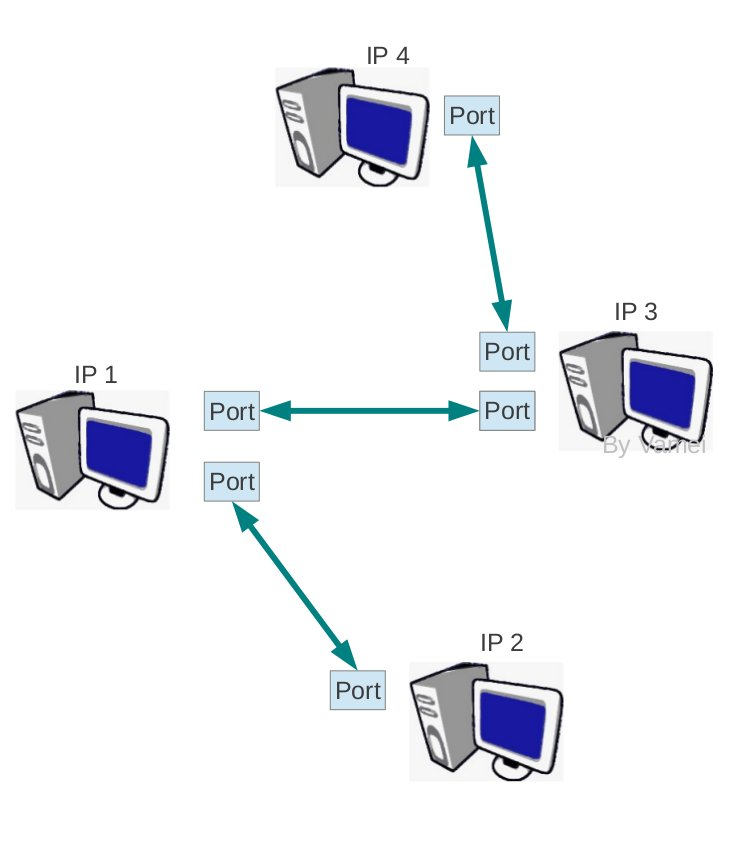
随着我们进入传输层，我们也可以调用操作系统中的 API，来构建 socket。Socket 是操作系统提供的一个编程接口，它用来代表某个网络通信。应用程序通过 socket 来调用系统内核中处理网络协议的模块，而这些内核模块会负责具体的网络协议的实施。这样，我们可以让内核来接收网络协议的细节，而我们只需要提供所要传输的内容就可以了，内核会帮我们控制格式，并进一步向底层封装。因此，在实际应用中，我们并不需要知道具体怎么构成一个 UDP 包，而只需要提供相关信息(比如 IP 地址，比如端口号，比如所要传输的信息)，操作系统内核会在传输之前会根据我们提供的相关信息构成一个合格的 UDP 包(以及下层的包和帧)。socket 是一个比较大的课题，在协议森林系列中不会过多深入。
- [4] 总结陈述
端口是传输层带来的最重要的概念。我们进一步了解了 UDP 协议。如果已经掌握了 IP 协议，那么 UDP 协议就没有任何困难可言，它只是 IP 协议暴露在传输层上的接口。
4.2 不放弃 (TCP 协议与”流”通信)
TCP(Transportation Control Protocol)协议与 IP 协议是一同产生的。事实上，两者最初是一个协议，后来才被分拆成网络层的 IP 和传输层的 TCP。我们已经在 UDP 协议中介绍过，UDP 协议是 IP 协议在传输层的“傀儡”，用来实现数据包形式的通信。而 TCP 协议则实现了“流”形式的通信。
- [1] “流”通信
TCP 协议是传输层协议，实现的是端口到端口(port)的通信。更进一步，TCP 协议虚拟了文本流(byte stream)的通信。在 Linux 文本流中我们谈到，计算机数据的本质是有序的 0/1 序列(如果以 byte 为单位，就叫做文本流)。计算机的功能就是储存和处理文本流。CPU + memory + 存储设备 实现了文本流在同一台计算机内部的加工处理。通过一些 IO，比如屏幕和键盘，文本流实现了人机交互。而进一步，如果网络通信可在不同计算机之间进行文本流的交互，那么我们就和整个计算机系统的数据处理方式实现了对接。
IP 协议和 UDP 协议采用的是数据包的方式传送，后发出的数据包可能早到，我们并不能保证数据到达的次序。TCP 协议确保了数据到达的顺序与文本流顺序相符。当计算机从 TCP 协议的接口读取数据时，这些数据已经是排列好顺序的“流”了。比如我们有一个大文件要从本地主机发送到远程主机，如果是按照“流”接收到的话，我们可以一边接收，一边将文本流存入文件系统。这样，等到“流”接收完了，硬盘写入操作也已经完成。如果采取 UDP 的传输方式，我们需要等到所有的数据到达后，进行排序，才能组装成大的文件。这种情况下，我们不得不使用大量的计算机资源来存储已经到达的数据，直到所有数据都达到了，才能开始处理。
“流”的要点是次序(order)，然而实现这一点并不简单。TCP 协议是基于 IP 协议的，所以最终数据传送还是以 IP 数据包为单位进行的。如果一个文本流很长的话，我们不可能将整个文本流放入到一个 IP 数据包中，那样有可能会超过 MTU。所以，TCP 协议封装到 IP 包的不是整个文本流，而是 TCP 协议所规定的片段(segment)。与之前的一个 IP 或者 UDP 数据包类似，一个 TCP 片段同样分为头部(header)和数据(payload)两部分(“片段”这个名字更多是起提醒作用：嘿，这里并不是完整的文本流)。整个文本流按照次序被分成小段，而每一段被放入 TCP 片段的数据部分。一个 TCP 片段封装成的 IP 包不超过整个 IP 接力路径上的最小 MTU，从而避免令人痛苦的碎片化(fragmentation)。
给文本流分段是在发送主机完成的，而碎片化是在网络中的路由器完成的。路由器要处理许多路的通信，所以相当繁忙。文本流提前在发送主机分好段，可以避免在路由器上执行碎片化，可大大减小网络负担。
TCP 片段的头部(header)会存有该片段的序列号(sequence number)。这样，接收的计算机就可以知道接收到的片段在原文本流中的顺序了，也可以知道自己下一步需要接收哪个片段以形成流。比如已经接收到了片段 1，片段 2，片段 3，那么接收主机就开始期待片段 4。如果接收到不符合顺序的数据包(比如片段 8)，接收方的 TCP 模块可以拒绝接收，从而保证呈现给接收主机的信息是符合次序的“流”。
- [2] 可靠性
片段编号这个初步的想法并不能解决我们所有的问题。IP 协议是不可靠的，所以 IP 数据包可能在传输过程中发生错误或者丢失。而 IP 传输是”Best Effort”式的，如果发生异常情况，我们的 IP 数据包就会被轻易的丢弃掉。另一方面，如果乱序(out of order)片段到达，根据我们上面说的，接收主机不会接收。这样，错误片段、丢失片段和被拒片段的联手破坏之下，接收主机只可能收到一个充满“漏洞”的文本流。
TCP 的补救方法是，在每收到一个正确的、符合次序的片段之后，就向发送方(也就是连接的另一段)发送一个特殊的 TCP 片段，用来知会(ACK，acknowledge)发送方：我已经收到那个片段了。这个特殊的 TCP 片段叫做 ACK 回复。如果一个片段序号为 L，对应 ACK 回复有回复号 L+1，也就是接收方期待接收的下一个发送片段的序号。如果发送方在一定时间等待之后，还是没有收到 ACK 回复，那么它推断之前发送的片段一定发生了异常。发送方会重复发送(retransmit)那个出现异常的片段，等待 ACK 回复，如果还没有收到，那么再重复发送原片段…
直到收到该片段对应的 ACK 回复(回复号为 L+1 的 ACK)。
当发送方收到 ACK 回复时，它看到里面的回复号为 L+1，也就是发送方下一个应该发送的 TCP 片段序号。发送方推断出之前的片段已经被正确的接收，随后发出 L+1 号片段。ACK 回复也有可能丢失。对于发送方来说，这和接收方拒绝发送 ACK 回复是一样的。发送方会重复发送，而接收方接收到已知会过的片段，推断出 ACK 回复丢失，会重新发送 ACK 回复。
通过 ACK 回复和重新发送机制，TCP 协议将片段传输变得可靠。尽管底盘是不可靠的 IP 协议，但 TCP 协议以一种“不放弃的精神”，不断尝试，最终成功。(技术也可以很励志)
TCP 协议和 UDP 协议走了两个极端。TCP 协议复杂但可靠，UDP 协议轻便但不可靠。在处理异常的时候，TCP 极端负责，而 UDP 一副无所谓的样子。我们可以顺便“黑”一下 UDP 协议：
- [3] 滑窗
上面的工作方式中，发送方保持发送->等待 ACK->发送->等待 ACK…的单线工作方式，这样的工作方式叫做 stop-and-wait。stop-and-wait 虽然实现了 TCP 通信的可靠性，但同时牺牲了网络通信的效率。在等待 ACK 的时间段内，我们的网络都处于闲置(idle)状态。我们希望有一种方式，可以同时发送出多个片段。然而如果同时发出多个片段，那么由于 IP 包传送是无次序的，有可能会生成乱序片段(out-of-order)，也就是后发出的片段先到达。在 stop-and-wait 的工作方式下，乱序片段完全被拒绝，这也很不效率。毕竟，乱序片段只是提前到达的片段。我们可以在缓存中先存放它，等到它之前的片段补充完毕，再将它缀在后面。然而，如果一个乱序片段实在是太过提前(太“乱”了)，该片段将长时间占用缓存。我们需要一种折中的方法来解决该问题：利用缓存保留一些“不那么乱”的片段，期望能在段时间内补充上之前的片段(暂不处理，但发送相应的ACK)；对于“乱”的比较厉害的片段，则将它们拒绝(不处理，也不发送对应的 ACK)。
滑窗(sliding window)被同时应用于接收方和发送方，以解决以上问题。发送方和接收方各有一个滑窗。当片段位于滑窗中时，表示 TCP 正在处理该片段。滑窗中可以有多个片段，也就是可以同时处理多个片段。滑窗越大，越大的滑窗同时处理的片段数目越多(当然，计算机也必须分配出更多的缓存供滑窗使用)。
我们假设一个可以容纳三个片段的滑窗，并假设片段从左向右排列。对于发送方来说，滑窗的左侧为已发送并已 ACK 过的片段序列，滑窗右侧是尚未发送的片段序列。滑窗中的片段(比如片段 5，6，7)被发送出去，并等待相应的 ACK。如果收到片段 5 的 ACK，滑窗将向右移动。这样，新的片段从右侧进入滑窗内，被发送出去，并进入等待状态。在接收到片段 5 的 ACK 之前，滑窗不会移动，即使已经收到了片段 6 和 7 的 ACK。这样，就保证了滑窗左侧的序列是已经发送的、接收到 ACK 的、符合顺序的片段序列。
对于接收方来说，滑窗的左侧是已经正确收到并 ACK 回复过的片段(比如片段 1，2，3，4)，也就是正确接收到的文本流。滑窗中是期望接收的片段(比如片段 5, 6, 7)。同样，如果片段 6，7 先到达，那么滑窗不会移动。如果片段 5 先到达，那么滑窗会向右移动，以等待接收新的片段。如果出现滑窗之外的片段，比如片段 9，那么滑窗将拒绝接收。
下面一个视频中，我尝试模拟可容纳三个片段的滑窗(固定大小)的工作过程。
如果视频加载有问题，可点下面链接： http://v.youku.com/v_show/id_XNDg1NDUyMDUy.html。
上面的视频是用 Python 和 matplotlib 包制作的。蓝色点表示片段，红色点表示 ACK。为了说明乱序片段，我故意让片段和 ACK 的速度从两个值中随机选择。可以看到，随着滑窗的滑动，越来越多的片段被正确的传送。利用滑窗，我们一定程度上实现了对乱序数据的缓存。但是，过于乱序的数据依然会被拒绝。我们之前说的 stop-and-wait 的工作方式，相当于发送方和接收方的滑窗都只能容纳一个片段。
我们将在以后看到，TCP 协议有实时调整滑窗大小的算法，以实现最优效率。
- [4] 总结陈述
TCP 协议和 UDP 协议走了两个极端。TCP 协议复杂但可靠，UDP 协议轻便但不可靠。在处理异常的时候，TCP 极端负责，而 UDP 一副无所谓的样子。在 TCP 中，分段和编号实现了次序；ACK 和重新发送实现了可靠性；sliding window 则让上面的机制更加有效率的运行。Never give up，这就是 TCP 协议的态度。
4.3 爱的传声筒 (TCP 连接)
在 TCP 协议与”流”通信中，我们概念性的讲解了 TCP 通信的方式。可以看到，TCP 通信最重要的特征是：有序(ordering)和可靠(reliable)。有序是通过将文本流分段并编号实现的。可靠是通过 ACK 回复和重复发送(retransmission)实现的。这一篇文章将引入 TCP 连接(connection)的概念。
- [1] TCP 连接
网络层在逻辑上提供了端口的概念。一个 IP 地址可以有多个端口。一个具体的端口需要 IP 地址和端口号共同确定(我们记为 IP:port 的形式)。一个连接为两个 IP:port 之间建立 TCP 通信。(一个常用的比喻为：TCP 连接就像两个人打电话，IP 为总机号码，port 为分机号码)
参与连接的如果是两台电脑，那么两台电脑操作系统的 TCP 模块负责建立连接。每个连接有四个参数(两个 IP，两个端口)，来表明“谁在和谁通话”。每台电脑都会记录有这四个参数，以确定是哪一个连接。如果这四个参数完全相同，则为同一连接；如果这四个参数有一个不同，即为不同的连接。这意味着，同一个端口上可以有多个连接。内核中的 TCP 模块生成连接之后，将连接分配给进程使用。
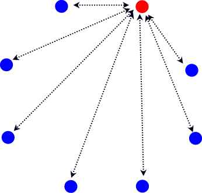
TCP 连接是双工(duplex)的。在 TCP 协议与”流”通信中，我们所展示的 TCP 传输是单向的。双向连接实际上就是建立两个方向的 TCP 传输，所以概念上并不复杂。这时，连接的每一方都需要两个滑窗，以分别处理发送的文本流和接收的文本流。由于连接的双向性，我们也要为两个方向的文本流编号。这两个文本流的编号相互独立。为文本流分段和编号由发送方来处理，回复 ACK 则由接收的一方进行。
- [2] TCP 片段的头部格式
在深入 TCP 连接之前，我们需要对 TCP 片段的头部格式有一些了解。我们知道，TCP 片段分为头部和数据。数据部分为 TCP 真正传输的文本流数据。下面为 TCP 片段的头部格式：
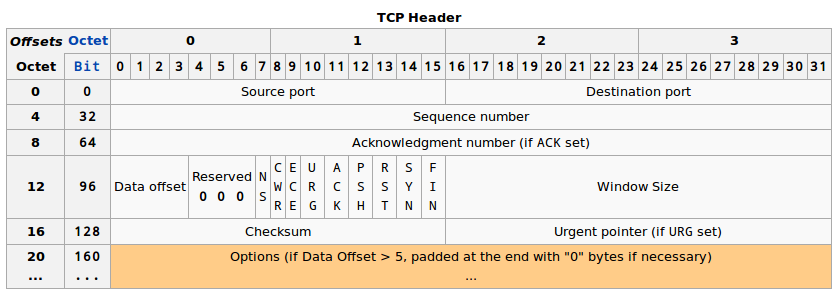
先关注下面几点：
- 一个
TCP头部需要包含出发端口(source port)和目的地端口(destination port)。这些与IP头中的两个IP地址共同确定了连接。 - 每个
TCP片段都有序列号(sequence number)。这些序列号最终将数据部分的文本片段整理成为文本流。 ACK是一位(bit)。只有ACK位设定的时候，回复号(Acknowledgement number)才有效。ACK回复号说明了接收方期待接收的下一个片段，所以ACK回复号为最后接收到的片段序号加1。
很多时候，ACK 回复“附着”在发送的数据片段中。TCP 协议是双向的。比如 A 和 B 两个电脑。ACK 回复是接收方回复给发送方(比如 A 发送给 B，B 回复 A)。但同时，B 也可以是发送方，B 有可能有数据发送给 A，所以 B 就把 ACK 回复附着在它要发送给 A 的数据片段的头部。这样可以减少 ACK 所占用的交通流量。一个片段可以只包含 ACK 回复。一个纯粹的 ACK 回复片段不传送文本流，所以不消耗序列号。如果有下一个正常的数据片段，它的序号将与纯粹 ACK 回复片段的序号相同。(ACK 回复还可以“附着”在 SYN 片段和 FIN 片段)
ACK后面还有SYN和FIN，它们也各占据一位(bit)。我将在后面说明这两位。
- [3] 连接的建立
在 TCP 协议与”流”通信中讨论的 TCP 传输需要一个前提：TCP 连接已经建立。然而，TCP 连接从无到有需要一个建立连接的过程。建立连接的最重要目是让连接的双方交换初始序列号(ISN)。根据 TCP 协议的规定，文本流的第一个片段的序列号不能是确定的数字(比如说 1)。连接的双方各自随机生成自己的 ISN，然后再利用的一定方式让对方了解。这样的规定是出于 TCP 连接安全考虑：如果以一个确定的数字作为初始的 TCP 序号，那么其他人很容易猜出接下来的序列号，并按照正确的序号发送“伪装”的 TCP 片段，以插入到文本流中。
ISN 交换是通过 SYN 片段实现的。SYN 片段由头部的 SYN 位表明，它的序列号为发送方的 ISN。该片段由连接的一方首先发给给另一方，我们将发送 SYN 的一方称为客户(client)，而接收 SYN 的一方称为服务器(server)。我们使用 ISN(c)表示 client 一方的 ISN，使用 ISN(s)表示 server 一方的 ISN。随后，接收到 SYN 的 server 需要回复 ACK，并发送出包含有 server 的 ISN 的 SYN 片段。下图为建立连接的过程，也就是经典的 TCP 三次握手(three-way handshaking)。两条竖直线分别为 client 和 server 的时间轴。每个箭头代表了一次 TCP 片段的单向传输。
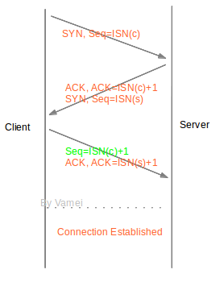
青色为纯粹的 ACK 片段。整个过程的本质是双方互发含有自己的 ISN 的 SYN 片段。根据 TCP 传输的规则，接收到 ISN 的一方需要回复 ACK，所以共计四片信息在建立连接过程中传输。之所以是三次握手(而不是四次)，是因为 server 将发送 SYN 和回复 ACK 合并到一个 TCP 片段中。我们以 client 方为例。client 知道自己的 ISN(也就是 ISN(c))。建立连接之后，它也知道了对方的 ISN(s)。此后，如果需要发送文本流片段，则编号为 ISN(c) + 1, ISN(c) + 2 …。如果接收文本流片段，则期待接收 ISN(s) + 1, ISN(s) + 2 …。
连接建立之后，连接的双方就可以按照 TCP 传输的方式相互发送文本流了。
- [4] 连接的正常终结
一个连接建立之后，连接两端的进程可以利用该连接进行通信。当连接的一方觉得“我讲完了”，它可以终结连接中发送到对方方向的通信。连接最终通过、四次握(four-wayhandshaking)的方式终结，连接终结使用的是特殊片段 FIN(FIN 位为 1 的片段)。
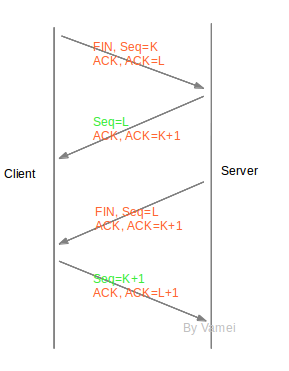
我们可以看到，连接终结的过程中，连接双方也交换了四片信息(两个 FIN 和两个 ACK)。在终结连接的过程中，TCP 并没有合并 FIN 与 ACK 片段。原因是 TCP 连接允许单向关闭(half-close)。也就是说，TCP 连接关闭了一个方向的传输，成为一个单向连接(half-duplex)。第二个箭头和第三个箭头传递必须分开，才能有空隙在开放的方向上继续传输。如果第二个箭头和第三个箭头合并在一起，那么，随着一方关闭，另一方也要被迫关闭。
第二和第三次握手之间，server 可以继续单向的发送片段给 client，但 client 不能发送数据片段给 server。
(上面的终结从 client 先发起，TCP 连接终结也可以从 server 先发起。)
在 Client 发送出最后的 ACK 回复，但该 ACK 可能丢失。Server 如果没有收到 ACK，将不断重复发送 FIN 片段。所以 Client 不能立即关闭，它必须确认 Server 接收到了该 ACK。Client 会在发送出 ACK 之后进入到 TIME_WAIT 状态。Client 会设置一个计时器，等待 2MSL 的时间。如果在该时间内再次收到 FIN，那么 Client 会重发 ACK 并再次等待 2MSL。所谓的 2MSL 是两倍的 MSL(Maximum Segment Lifetime)。MSL 指一个片段在网络中最大的存活时间，2MSL 就是一个发送和一个回复所需的最大时间。如果直到 2MSL，Client 都没有再次收到 FIN，那么 Client 推断 ACK 已经被成功接收，则结束 TCP 连接。
- [5] 总结陈述
TCP 是连接导向的协议，与之对应的是像 UDP 这样的非连接导向的协议。连接能带来更好的传输控制，但也需要更多额外的工作，比如连接的建立和终结。我们还初步了解了 TCP 的头部格式。应该注意到，许多时候我们将 ACK 片段“附着”在其他片段上。相对于纯粹的 ACK 片段，我们这样做节约了 ACK 所需的流量。事实上，由于 ACK 片段所需的 ACK 位和 acknowledge number 区域总是存在于 TCP 的头部，所以附着 ACK 片段的成本基本上等于 0。
4.4 魔鬼细节 (TCP 滑窗管理)
在 TCP 协议与”流”通信中，我们建立了滑窗(sliding window)的基本概念。通过滑窗与 ACK 的配合，我们一方面实现了 TCP 传输的可靠性，另一方面也一定程度上提高了效率。然而，之前的解释只是概念性的。TCP 为了达到更好的传输效率，对上面的工作方式进行了许多改进。我们需要深入到细节，才能看清楚 TCP 协议的智慧所在。
- [1] 累计 ACK
在 TCP 连接中，我们通过将 ACK 回复“附着”在其他数据片段的方式，减少了 ACK 回复所消耗的流量。但这并不是全部的故事。TCP 协议并不是对每个片段都发送 ACK 回复。TCP 协议实际采用的是累计 ACK 回复(accumulative acknowledgement)。接收方往往利用一个 ACK 回复来知会连续多个片段的成功接收。通过累计 ACK，所需要的 ACK 回复通常可以降到 50%。如下图所示，橙色为已经接收的片段。方框为滑窗，滑窗可容纳 3 个片段。
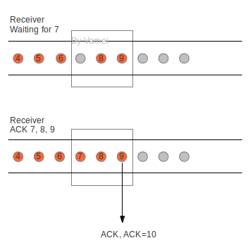
滑窗还没接收到片段 7 时，已接收到片段 8，9。这样就在滑窗中制造了一个“空穴”(hole)。当滑窗最终接收到片段 7 时，滑窗送出一个回复号为 10 的 ACK 回复。发送方收到该回复，会意识到，片段 10 之前的片段已经按照次序被成功接收。整个过程中节约了片段 7 和片段 8 所需的两个 ACK 回复。此外，接收方在接收到片断，并应该回复 ACK 的时候，会故意延迟一些时间。如果在延迟的时间里，有后续的片段到达，就可以利用累计 ACK 来一起回复了。
- [2] 滑窗结构
在之前的讨论中，我们以片段为单位，来衡量滑窗的大小的。真实的滑窗是以 byte 为单位表示大小，但这并不会对我们之前的讨论造成太大的影响。发送方滑窗可以分为下面两个部分。offered window 为整个滑窗的大小。
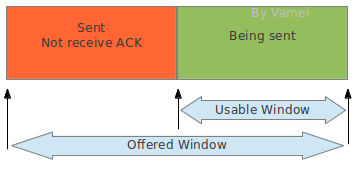
接收方滑窗可分为三个部分：
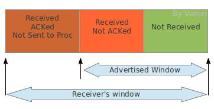
可以看到，接收方的滑窗相对于发送方的滑窗多了一个 Received; ACKed; Not Sent to Proc 的部分。接收方接收到的文本流必须等待进程来读取。如果进程正忙于做别的事情，那么这些文本流即使已经正确接收，还是需要暂时占用接收缓存。当出现上述占用时，滑窗的可用部分(也就是图中 advertised window)就会缩水。这意味着接收方的处理能力下降。如果这个时候发送方依然按照之前的速率发送数据给接收方，接收方将无力接收这些数据。
- [3] 流量控制
TCP 协议会根据情况自动改变滑窗大小，以实现流量控制。流量控制(flow control)是指接收方将 advertised window 的大小通知给发送方，从而指导发送方修改 offered window 的大小。接收方将该信息放在 TCP 头部的 window size 区域：

发送方在收到 window size 的通知时，会调整自己滑窗的大小，让 offered window 和 advertised window 相符。这样，发送窗口变小，文本流发送速率降低，从而减少了接收方的负担。
- [4] 零窗口
advertised window 大小有可能变为 0，这意味着接收方的接收能力降为 0。发送方收到大小为 0 的 advertised window 通知时，停止发送。当接收方经过处理，再次产生可用的 advertised window 时，接收方会通过纯粹的 ACK 回复来通知发送方，让发送方恢复发送。然而，ACK 回复的传送并不是可靠的。如果该 ACK 回复丢失，那么 TCP 传输将陷入死锁(deadlock)状态。
为此，发送方会在零窗口后，不断探测接收方的窗口。窗口探测(window probe)时，发送方会向接收方发送包含 1 byte 文本流的 TCP 片段，并等待 ACK 回复(该 ACK 回复包含有 window size)。由于有 1 byte 的数据存在，所以该传输是可靠的，而不用担心 ACK 回复丢失的问题。如果探测结果显示窗口依然为 0，发送方会等待更长的时间，然后再次进行窗口探测，直到 TCP 传输恢复。
- [5] 白痴窗口综合症
滑窗机制有可能犯病，比如白痴窗口综合症(Silly Window Syndrome)。假设这样一种情形：接收方宣布(advertise)一个小的窗口，发送方根据 advertised window，发送一个小的片段。接收方的小窗口被填满，经过处理，接收方再宣布一个小的窗口。这就是“白痴窗口综合症”：TCP 通信的片段中包含的数据量很小。在这样的情况下，TCP 通信的片段所含的信息都很小，网络流量主要是 TCP 片段的头部，从而造成流量的浪费(由于 TCP 头部很大，我们希望每个 TCP 片段中含有比较多的数据)。
如果发送方不断发送小的片段，也会造成“白痴窗口”。为了解决这个问题，需要从两方面入手。TCP 中有相关的规定，要求：接收方宣告的窗口必须达到一定的尺寸，否则等待。除了一些特殊情况，发送方发送的片段必须达到一定的尺寸，否则等待。特殊情况主要是指需要最小化延迟的 TCP 应用(比如命令行互动)。
- [6] 总结陈述
累计 ACK 减少了 TCP 传输过程中所需的 ACK 流量。通过流量管理，TCP 连接两端的工作能力可以匹配，从而减少不不要的传输浪费。累计 ACK 和流量控制都是 TCP 协议的重要特征。TCP 协议相当复杂，并充斥着各种细节。然而 TCP 协议又是如此重要的一个协议，引领风骚三十年，可以说是互联网的奇迹。这些细节正是 TCP 协议成功的原因，并值得我们深入了解。
4.5 涅槃 (TCP 重新发送)
TCP 协议是一个可靠的协议。它通过重新发送(retransmission)来实现 TCP 片段传输的可靠性。简单的说，TCP 会不断重复发送 TCP 片段，直到片段被正确接收。
- [1] TCP 片段丢失

接收方(receiver)可以通过校验 TCP 片段头部中 checksum 区域来检验 TCP 片段是否出错。我们已经接触过了 IP 协议详解的 checksum 算法。TCP 片段的 checksum 算法与之类似。IP 协议的 checksum 只校验头部，TCP 片段头部的 checksum 会校验包括 IP 头部、TCP 头部和 TCP 数据在内的整个序列，确保 IP 地址、端口号和其他相关信息正确。如果 TCP 片段出错，接收方可以简单的丢弃改 TCP 片段，也就相当于 TCP 片段丢失。
TCP 片段包裹在一个 IP 包中传输。IP 包可能在网络中丢失。导致 IP 包丢失的原因可能有很多，比如 IP 包经过太多的路由器接力，达到 hop limit；比如路由器太过拥挤，导致一些 IP 包被丢弃；再比如路由表(routing table)没有及时更新，导致 IP 包无法送达目的地。下面我们要介绍两种重新发送 TCP 片段的机制：超时重新发送和快速重新发送。
- [2] 超时重新发送
我们之前已经简单介绍过重新发送的机制：当发送方送出一个 TCP 片段后，将开始计时，等待该 TCP 片段的 ACK 回复。如果接收方正确接收到符合次序的片段，接收方会利用 ACK 片段回复发送方。发送方得到 ACK 回复后，继续移动窗口，发送接下来的 TCP 片段。如果直到计时完成，发送方还是没有收到ACK回复，那么发送方推断之前发送的 TCP 片段丢失，因此重新发送之前的 TCP 片段。这个计时等待的时间叫做重新发送超时时间(RTO)。
发送方应该在等待多长时间之后重新发送呢？这是重新发送的核心问题。上述过程实际上有往返两个方向：1.发送片段从发送方到接收方的传输，2. ACK 片段从接收方到发送方的传输。整个过程实际耗费的时间称做往返时间(RTT)。如果 RTT 是固定的，比如 1 秒，那么我们可以让 RTO 等于 RTT。但实际上，RTT 的上下浮动很大。比如某个时刻，网络中有许多交通，那么 RTT 就增加。在 RTT 浮动的情况下，如果我们设置了过小的 RTO，那么 TCP 会等待很短的时间之后重新发送，而实际上之前发送的片段并没有丢失，只是传输速度比较慢而已，这样，网络中就被重复注入 TCP 片段，从而浪费网络传输资源。另一方面，如果 RTO 时间过长，那么当 TCP 片段已经实际丢失的情况下，发送方不能及时重新发送，会造成网络资源的闲置。所以，RTO 必须符合当前网络的使用状况。网络状况越好，RTO 应该越短；网络状况越差，RTO 应该越长。
TCP 协议通过统计 RTT，来决定合理的 RTO。发送方可以测量每一次 TCP 传输的 RTT(从发送出数据片段开始，到接收到 ACK 片段为止)，这样的每次测量得到的往返时间，叫做采样 RTT。建立连接之后，每次的 srtt 作为采样样本，计算平均值(mean)和标准差(standard deviation)，并让 RTO 等于 srtt 平均值加上四倍的 srtt 标准差。
# 上述算法有多个变种，根据平台不同有所变化
RTO = mean + 4 std平均值反映了平均意义上的 RTT，平均往返时间越大，RTO 越大。另一方面，标准差越大也会影响 RTO。标准差代表了 RTT 样本的离散程度。如果 RTT 上下剧烈浮动，标准差比较大。RTT 浮动大，说明当前网络状况相对不稳定。因此要设置更长的 RTO，以应对不稳定的网络状况。
- [3] 快速重新发送
我们刚才介绍了超时重新发送的机制：发送方送出一个 TCP 片段，然后开始等待并计时，如果 RTO 时间之后还没有收到 ACK 回复，发送方则重新发送。TCP 协议有可能在计时完成之前启动重新发送，也就是利用快速重新发送(fast-retransmission)。快速发送机制如果被启动，将打断计时器的等待，直接重新发送 TCP 片段。
由于 IP 包的传输是无序的，所以接收方有可能先收到后发出的片段，也就是乱序(out-of-order)片段。乱序片段的序号并不等于最近发出的 ACK 回复号。已接收的文本流和乱序片段之间将出现空洞(hole)，也就是等待接收的空位。比如已经接收了正常片段 5/6/7，此时又接收乱序片段 9。这时片段 8 依然空缺，片段 8 的位置就是一个空洞。
TCP 协议规定，当接收方收到乱序片段的时候，需要重复发送 ACK。比如接收到乱序片段 9 的时候，接收方需要回复 ACK。回复号为 8(7+1)。此后接收方如果继续收到乱序片段(序号不是 8 的片段)，将再次重复发送 ACK=8。当发送方收到 3 个 ACK=8 的回复时，发送方推断片段 8 丢失。即使此时片段 8 的计时器还没有超时，发送方会打断计时，直接重新发送片段 8，这就是快速重新发送机制(fast-retransmission)。
快速重新发送机制利用重复的 ACK 来提示空洞的存在。当重复次数达到阈值时，认为空洞对应的片段在网络中丢失。快速重新发送机制提高了检测丢失片段的效率，往往可以在超时之前探测到丢失片段，并重复发送丢失的片段。
- [4] 总结陈述
凤凰浴火重生。而 TCP 协议利用重新发送(retransmission)来实现 TCP 传输的可靠性。重新发送的基本形式是超时重新发送，根据统计的往返时间来设置超时标准；如果超时，则重新发送 TCP 片段。另一方面，快速重新发送则通过乱序片段的 ACK 来更早的推断出片段的丢失。
4.6 天下为公 (TCP 堵塞控制)
在 TCP 协议中，我们使用连接记录 TCP 两端的状态，使用编号和分段实现了 TCP 传输的有序，使用 advertised window 来实现了发送方和接收方处理能力的匹配，并使用重复发送来实现 TCP 传输的可靠性。我们只需要将 TCP 片段包装成 IP 包，扔到网络中就可以了。TCP 协议的相关模块会帮我们处理各种可能出现的问题(比如排序，比如 TCP 片段丢失等等)。最初的 TCP 协议就是由上述的几大块构成的。
然而进入上世纪八十年代，网络开始变的繁忙。许多网络中出现了大量的堵塞(congestion)。堵塞类似于现实中的堵车。网络被称为“信息高速公路”。许多汽车(IP 包)在网络中行驶，并经过一个一个路口(路由器)，直到到达目的地。一个路由器如果过度繁忙，会丢弃一些 IP 包。UDP 协议不保证传输的可靠性，所以丢失就丢失了。而 TCP 协议需要保证传输的可靠性，当包含有 TCP 片段的 IP 包丢失时，TCP 协议会重复发送 TCP 片段。于是，更多的“汽车”进入到公路中，原本繁忙的路由器变得更加繁忙，更多的 IP 包丢失。这样就构成了一个恶性循环。这样的情况被称为堵塞崩溃(congestion collapse)。每个发送方为了保证自己的发送质量，而不顾及公共领域现状，是造成堵塞崩溃的主要原因。当时的网络中高达 90% 的传输资源可能被堵塞崩溃所浪费。
为了解决这一缺陷，从八十年代开始，TCP 协议中开始加入堵塞控制(congestion control)的功能，以避免堵塞崩溃的出现。多个算法被提出并实施，大大改善了网络的交通状况。直到今天，堵塞控制依然是互联网研究的一个活跃领域。
- [1] 公德
现实中，当我们遇到堵车，可能就会希望兴建立交桥和高架，或者希望有一位交警来疏导交通。而 TCP 协议的堵塞控制是通过约束自己实现的。当 TCP 的发送方探测到网络交通拥堵时，会控制自己发送片段的速率，以缓解网络的交通状况，避免堵塞崩溃。简言之，TCP 协议规定了发送方需要遵守的“公德”。
我们先来说明堵塞是如何探测的。在 TCP 重新发送中，我们已经总结了两种推测 TCP 片段丢失的方法：ACK 超时和重复 ACK。一旦发送方认为 TCP 片段丢失，则认为网络中出现堵塞。另一方面，TCP 发送方是如何控制发送速率呢？TCP 协议通过控制滑窗(sliding window)大小来控制发送速率。在 TCP 滑窗管理中，我们已经见到了一个窗口限制，就是 advertised window size，以实现 TCP 流量控制。TCP 还会维护一个堵塞窗口大小，以根据网络状况来调整滑窗大小。真实滑窗大小取这两个滑窗限制的最小值，从而同时满足两个限制 (流量控制和堵塞控制)。我们将专注于堵塞窗口。(Hulk，smash!)
- [2] 堵塞窗口
堵塞窗口(congestion window)总是处于两种状态的一个。这两种状态是: 慢启动(slow start)和堵塞规避(congestion avoidance)。
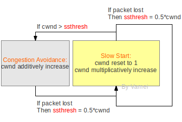
上图是概念性的。实际的实施要比上图复杂，而且根据算法不同会有不同的版本。cwnd 代表堵塞窗口大小。我们以片段的个数为单位，来表示 cwnd 的大小 (同样是概念性的)。堵塞窗口从慢启动的状态开始。慢启动的特点是初始速率低，但速率不断倍增。每次进入到慢启动状态时，cwnd 都需要重置为初始值 1。发送方每接收到一个正确的 ACK，就会将堵塞窗口增加 1，从而实现速率的倍增(由于累计 ACK，速率增长可能会小于倍增)。
当堵塞窗口的大小达到某个阈值 ssthresh 时，congestion 进入到堵塞规避(congestion avoidance)状态。发送速率会继续增长。发送方在每个窗户所有片段成功传输后，将窗口尺寸增加 1(实际上就是每个 RTT 增加 1)。所以在堵塞规避状态下，cwnd 线性增长，增长速率慢。如果在堵塞规避下有片段丢失，重新回到慢启动状态，并将 ssthresh 更新为 cwnd 的一半。
我们看到，sshthresh 是慢启动到堵塞规避的切换点。而片段丢失是堵塞规避到慢启动的切换点。一开始 sshthresh 的值一般比较大，所以慢启动可能在切换成堵塞规避之前就丢失片段。这种情况下，慢启动会重新开始，而 ssthresh 更新为 cwnd 的一半。
总的来说，发送速率总是在增长。如果片段丢失，则重置速率为 1，并快速增长。增长到一定程度，则进入到慢性增长。快速增长和慢性增长的切换点(sshthred)会随着网络状况(何时出现片段丢失)更新。通过上面的机制，让发送速率处于动态平衡，不断的尝试更大值。初始时增长块，而接近饱和时增长慢。但一旦尝试过度，则迅速重置，以免造成网络负担。
- [3] 总结陈述
阻塞控制有效的提高了互联网的利用率。阻塞控制的算法多种多样，并且依然不完善。一个常见的问题是 cwnd 在接近饱和时线性增长，因此对新增的网络带宽不敏感。互联网利用“公德”来实现效率。“公德”和效率似乎可以并存。到现在为止，TCP 协议的介绍就可以告一段落了。可以回想一下 TCP 的几大模块：分段与流，滑窗，连接，流量控制，重新发送，堵塞控制。
5. 应用层
5.1 9527 (DNS 协议)
- [1] 9527 (DNS 协议)
在周星驰的电影《唐伯虎点秋香》中，周星驰饰演的主角一进入华府，就被强制增加了一个代号 9527。从此，华府的人开始称呼主角为 9527，而不是他的姓名。
域名(domain name)是 IP 地址的代号。域名通常是由字符构成的。对于人类来说，字符构成的域名，比如 www.yahoo.com，要比纯粹数字构成的 IP 地址(106.10.170.118)容易记忆。域名解析系统(DNS，domain name system)就负责将域名翻译为对应的 IP 地址。在 DNS 的帮助下，我们可以在浏览器的地址栏输入域名，而不是 IP 地址。这大大减轻了互联网用户的记忆负担。另一方面，处于维护和运营的原因，一些网站可能会变更 IP 地址。这些网站可以更改 DNS 中的对应关系，从而保持域名不变，而 IP 地址更新。由于大部分用户记录的都是域名，这样就可以降低 IP 变更带来的影响。
从机器和技术的角度上来说，域名并不是必须的。但 Internet 是由机器和用户共同构成的。鉴于 DNS 对用户的巨大帮助，DNS 已经被当作 TCP/IP 套装不可或缺的一个组成部分。
- [2] DNS 服务器
域名和 IP 地址的对应关系存储在 DNS 服务器(DNS server)中。所谓的 DNS 服务器，是指在网络中进行域名解析的一些服务器(计算机)。这些服务器都有自己的 IP 地址，并使用 DNS 协议(DNS protocol)进行通信。DNS 协议主要基于 UDP，是应用层协议(这也是我们见到的第一个应用层协议)。
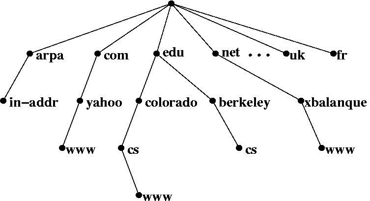
DNS 服务器构成一个分级(hierarchical)的树状体系。上图中，每个节点(node)为一个 DNS 服务器，每个节点都有自己的 IP 地址。树的顶端为用户电脑出口处的 DNS 服务器。在 Linux 下，可以使用 cat /etc/resolv.conf，在 Windows 下，可以使用 ipconfig /all，来查询出口 DNS 服务器。树的末端是真正的 域名/IP 对应关系记录。一次 DNS 查询就是从树的顶端节点出发，最终找到相应末端记录的过程。
中间节点根据域名的构成，将 DNS 查询引导向下一级的服务器。比如说一个域名 cs.berkeley.edu，DNS 解析会将域名分割为 cs, berkeley, edu，然后按照相反的顺序查询(edu, berkeley, cs)。出口 DNS 首先根据 edu，将查询指向下一层的 edu 节点。然后 edu 节点根据 berkeley，将查询指向下一层的 berkeley 节点。这台 berkeley 服务器上存储有 cs.berkeley.edu 的 IP 地址。所以，中间节点不断重新定向，并将我们引导到正确的记录。
在整个 DNS 查询过程中，无论是重新定向还是最终取得对应关系，都是用户计算机和 DNS 服务器使用 DNS 协议通信。用户计算机根据 DNS 服务器的反馈，依次与下一层的 DNS 服务器建立通信。用户计算机经过递归查询，最终和末端节点通信，并获得 IP 地址。

- [3] 缓存
用户计算机的操作系统中的域名解析模块(DNS Resolver)负责域名解析的相关工作。任何一个应用程序(邮件，浏览器)都可以通过调用该模块来进行域名解析。
并不是每次域名解析都要完整的经历解析过程。DNS Resolver 通常有 DNS 缓存(cache)，用来记录最近使用和查询的 域名/IP 关系。在进行 DNS 查询之前，计算机会先查询 cache 中是否有相关记录。这样，重复使用的域名就不用总要经过整个递归查询过程。
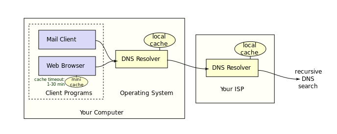
- [4] 反向 DNS
上面的 DNS 查询均为正向 DNS 查询：已经知道域名，想要查询对应 IP。而反向 DNS(reverse DNS)是已经知道 IP 的前提下，想要查询域名。反向 DNS 也是采用分层查询方式，对于一个 IP 地址(比如 106.10.170.118)，依次查询 in-addr.arpa 节点(如果是 IPv6，则为 ip6.arpa 节点)，106 节点，10 节点，170 节点，并在该节点获得 106.10.170.118 对应的域名。
5.2 先生，要点单吗? (HTTP 协议)
我们在 TCP 流通信中说明了，TCP 协议实现了数据流的传输。然而，在实践中发现，人们往往习惯以文件为单位传输资源，比如文本文件，图像文件，超文本文档(hypertext document)。超文本文档中包含有超链接，指向其他的资源。超文本文档是万维网(World Wide Web，即 www)的基础。HTTP 协议是应用层协议，它随着万维网发展起来。HTTP 协议最初只是一套实践标准。其本质目的是，如何在万维网的网络环境下，更好的使用 TCP 协议(尽管 HTTP 协议也可以用 UDP 协议作为底层，但绝大部分都是基于 TCP 协议)，以实现文件，特别是超文本文件的传输。
早期的 HTTP 协议主要是传输静态文件，也就是存储在服务器上的文件。随着万维网的发展，HTTP 协议被用于传输“动态文件”，这样的文件是服务器上的程序根据 HTTP 请求即时生成的文件。我们将 HTTP 的传输对象统称为资源(resource)。
- [1] 点单
HTTP 实现的是资源的订购和传送。其工作方式类似于快餐点单。请求(request): 顾客向服务员提出请求：“来个鸡腿汉堡”。回复(response):服务员根据情况，回应顾客的请求
根据情况的不同，服务员的回应可能有: 服务员准备鸡腿汉堡，将鸡腿汉堡交给顾客（一切 OK）。；服务员发现自己只是个甜品站。他让顾客前往正式柜台点单（重新定向）。；服务员告诉顾客鸡腿汉堡没有了(无法找到)。交易结束后，服务员就将刚才的交易抛到脑后，准备服务下一位顾客。
- [2] 格式
HTTP 协议的通信是一次 request-responce 交流。客户端(guest)向服务器发出请求(request)，服务器(server)回复(response)客户端。
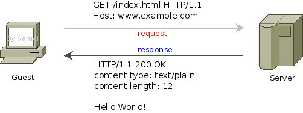
HTTP 协议规定了请求和回复需要遵循的格式。请求和回复需要满足下面的格式:
起始行 (start line)
头信息 (headers)
主体(entity body)起始行只有一行。它包含了请求/回复最重要的信息。请求的起始行表示(顾客)“想要什么”。回复的起始行表示(后厨)“发生什么”。
头信息可以有多行。每一行是一对键值对(key-value pair)，比如:
Content-type: text/plain它表示，包含有一个名为 Content-type 的参数，该参数的值为 text/plain。头信息是对起始行的补充。请求的头信息对服务器有指导意义(好像在菜单上注明: 鸡腿不要辣)。回复的头信息则是提示客户端（比如，在盒子上注明: 小心烫）
主体部分包含了具体的资源。上图的请求中并没有主体，因为我们只是在下单，而不用该后厨送什么东西(请求是可以有主体内容的)。回复中包含的主体是一段文本文字(Hello World!)。这段文本文字正是顾客所期待的，鸡腿汉堡。
- [3] 请求
我们深入一些细节。先来看一下请求:
GET /index.html HTTP/1.1
Host: www.example.com在起始行中，有三段信息:
GET方法。用于说明想要服务器执行的操作。/index.html资源的路径。这里指向服务器上的index.html文件。HTTP/1.1协议的版本。HTTP第一个广泛使用的版本是1.0，当前版本为1.1。
早期的 HTTP 协议只有 GET 方法。遵从 HTTP 协议，服务器接收到 GET 请求后，会将特定资源传送给客户。这类似于客户点单，并获得汉堡的过程。使用 GET 方法时，是客户向服务器索取资源，所以请求往往没有主体部分。
GET 方法也可以用于传输一些不重要的数据。它是通过改写 URL 的方式实现的。GET 的数据利用 URL?变量名＝变量值 的方法传输。比如向 <http://127.0.0.1> 发送一个变量 “q”，它的值为 “a”。那么，实际的 URL 为 <http://127.0.0.1?q=a>。服务器收到请求后，就可以知道 "q" 的值为 "a"。
ET 方法之外，最常用的是 POST 方法。它用于从客户端向服务器提交数据。使用 POST 方法时，URL 不再被改写。数据位于 http 请求的主体。POST 方法最用于提交 HTML 的 form 数据。服务器往往会对 POST 方法提交的数据进行一定的处理，比如存入服务器数据库。
样例请求中有一行头信息。该头信息的名字是 Host。HTTP 的请求必须有 Host 头信息，用于说明服务器的地址和端口。HTTP 协议的默认端口是 80，如果在 HOST 中没有说明端口，那么将默认采取该端口。在该例子中，服务器的域名为 www.example.com，端口为 80。域名将通过 DNS 服务器转换为 IP 地址，从而确定服务器在互联网上的地址。
- [4] 回复
服务器在接收到请求之后，会根据程序，生成对应于该请求的回复，比如:
HTTP/1.1 200 OK
Content-type: text/plain
Content-length: 12
Hello World!回复的起始行同样包含三段信息
HTTP/1.1协议版本200状态码(status code)。OK状态描述
OK 是对状态码 200 的文字描述，它只是为了便于人类的阅读。电脑只关心三位的状态码(status code)，即这里的 200。200 表示一切 OK，资源正常返回。状态码代表了服务器回应动作的类型。
其它常见的状态码还有:
302，重新定向(redirect): 我这里没有你想要的资源，但我知道另一个地方xxx有，你可以去那里找。404，无法找到(not found): 我找不到你想要的资源，无能为力。
Content-type 说明了主体所包含的资源的类型。根据类型的不同，客户端可以启动不同的处理程序(比如显示图像文件，播放声音文件等等)。下面是一些常见的资源
text/plain普通文本text/htmlHTML 文本image/jpegjpeg 图片image/gifgif 图片
Content-length 说明了主体部分的长度，以字节(byte)为单位。
回应的主体部分为一段普通文本，即 Hello World!。
- [5] 无状态
根据早期的 HTTP 协议，每次 request-reponse 时，都要重新建立 TCP 连接。TCP 连接每次都重新建立，所以服务器无法知道上次请求和本次请求是否来自于同一个客户端。因此，HTTP 通信是无状态(stateless)的。服务器认为每次请求都是一个全新的请求，无论该请求是否来自同一地址。
想象高级餐厅和快餐店。高级餐厅会知道客人所在的位置，如果新增点单，那么服务员知道这和上一单同一桌。而在快餐店中，不好意思，服务员并不记录客人的特征。想再次点单？请重新排队……随着 HTTP 协议的发展，HTTP 协议允许 TCP 连接复用，以节省建立连接所耗费的时间。但 HTTP 协议依然保持无状态的特性。
5.3 小美的桌号 (DHCP 协议)
DHCP 协议用于动态的配置电脑的网络相关参数，如主机的 IP 地址，路由器出口地址、DNS 域名服务器地址等。一台电脑只要接上网，就可以通过 DHCP 协议获得相关配置，从而顺利的畅游网络。
- [1] 网络配置
电脑刚刚接上网络时，像一个走入一家新餐厅的食客，不免会有很多疑惑。如果顾客的问题长时间得不到解答，那么餐厅很可能失去这位客人。于是，餐厅往往会雇一些服务员。他们可以把客人引导到空闲的座位，并告诉顾客如何点餐、如何结账等。同样，在网络通信中，一台电脑需要设置自己的 IP 地址等网络参数。可对于电脑用户来说，这些设置太过复杂。幸好，DHCP 协议可以解决这一让人头痛的问题。
DHCP 协议全称为“动态主机设置协议”（Dynamic Host Configuration Protocol）。通常来说，普通电脑中都内置有 DHCP 客户端模块。电脑接上网络后，DHCP 客户端发现新连通的网络，会在该网络上找 DHCP 服务器。DHCP 服务器将给电脑提供合理的网络配置，并把设置信息传回本机。所谓的 DHCP 服务器，其实就是一些运行有 DHCP 服务器端软件的特殊电脑。他们像等候在网络上的服务员，为新来的顾客排忧解难。本机和 DHCP 服务器之间的通信，都是通过 DHCP 协议进行的。
其实在网络诞生初期，就有了用一台服务器为网络上的电脑配置参数的做法。最早的一个协议叫 BOOTP（Bootstrap Protocol），主要用于开机配置。计算机开机时需要很多配置参数。对于没有磁盘的计算机来说，它无法获得这些参数，但可以通过 BOOTP 从网络上的其他设备上获得。DHCP 大体上继承了 BOOTP 的工作方式，但在细节上进行了改进。我们将在以后看到。
- [2] 地址分配
服务员最重要的任务是为客人找座位。类似的，DHCP 服务器的首要任务是分配 IP 地址。分配的 IP 地址要符合以下原则：
- 地址合法，即对应该局域网的
IP地址和子网掩码。 - 地址空闲，同一网络下没有其他设备使用该地址。
DHCP 服务器上存有一个地址池，里面是可用的 IP 地址，相当于服务员手中的空闲桌号列表。当新客人出现时，DHCP 服务器就会从地址池中取出一个 IP 地址分配给客人。此外，服务器还会说明 IP 地址的占用时间，也就是租期。
当然，主机使用网络的时间可能超过租期。如果主机在租期到时都没有联系 DHCP 服务器，那么 DHCP 服务器会收回 IP 地址，再分配给其他主机。可如果主机想继续使用 IP 地址，就要在中途申请延长租期。收到申请的 DHCP 服务器通常会答应主机的请求，允许它继续使用现有 IP 地址。但少数情况下，服务器会要求主机更换 IP 地址。如果主机联系不上 DHCP 服务器，那么它必须立即停止使用 IP 地址，重启寻找 DHCP 服务器的过程。
有了动态分配，DHCP 服务器不但简化了网络配置过程，还可以有效利用 IP 地址资源。例如一个咖啡馆的 Wifi 路由允许 200 台设备接入。咖啡馆每天进出的客人很多。如果每个客人都要求一个不一样的 IP 地址的话，所需地址会远远超过 200 台。而通过动态的方式，200 个 IP 地址不断回收使用，完全可以满足客人的需要。有时，DHCP 服务器会预留一些地址给特定 MAC 地址的设备使用。这就好像餐厅给贵宾预留座位，不允许其他客人坐。这样的地址通常会分配给打印机、传真机等特殊设备。由于 IP 地址固定，用户可以方便的通过 IP 地址找到它们。
- [3] 通信过程
DHCP 协议的底层是 UDP 协议。我们知道，网络上的点对点沟通需要有 IP 地址。但新接入网络的客户机正是想通过 DHCP 通信来获得 IP 地址。这简直成了“鸡生蛋、蛋生鸡”的死胡同。幸好，除了点对点通信，UDP 协议还允许广播通信。把 UDP 数据包发送到网络的广播地址，网络上的每个设备都能收到。因此，DHCP 通信主要靠这种广播的形式进行。
DHCP 通信分为四步：
Discovery：客户机发广播，搜寻DHCP服务器。Offer：DHCP服务器发出邀请，提供一个可用的IP地址。Request：客户机正式请求使用该IP地址。Acknowledge：DHCP服务器确认，并提供其他配置参数。
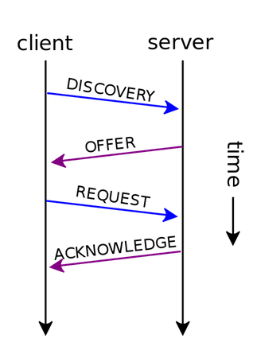
每一步的通信内容都放在一个符合 DHCP 格式的数据包中。数据包中可以包括客户机 IP 地址、服务器 IP 地址、客户的硬件 MAC 编号等字段，还能附加多条网络设置参数。当某些信息未知时，如客户机的 IP 地址，相应的字段可以填成 0。
经过这一系列的 DHCP 通信，客户机获得了自己的 IP 地址，也记下了租期时间。为了防止 DHCP 服务器不靠谱，客户机通常还会探测一下网络，以免该 IP 已经被其他设备占用。除了租期，DHCP 服务器最终确认中，还可能加上其他网络配置信息，如 DNS 服务器地址、网络出口地址等。客户机可以选择接受，也可以拒绝 DHCP 服务器的“好意”，自行设置这些参数。
- [4] DHCP 攻击
一定程度上说，DHCP 服务器是个活雷锋，为网络上的其他设备提供公共服务，免得设备之间私自打架。人们也越来越信赖这个活雷锋，只管接上网线、连上 Wifi，让 DHCP 服务器处理配置之类的杂事。无形中，DHCP 服务器掌握了很大的公共权力。一些黑客攻击手法开始瞄准 DHCP 服务器。
针对 DHCP 的一种攻击办法是从服务器那里骗 IP 地址。攻击者的电脑可以不断发出 DHCP 请求，冒充成新入网的客户机。于是，DHCP 服务器的地址池被耗干，无法分配地址给后来的用户。后来的用户再也没法使用网络服务。攻击者很可能会继续下连环套。攻击者占有了大量 IP 地址，可以装扮成新的 DHCP 服务器，把自己骗来的 IP 地址分配给网络上的新用户。
当然不是。DHCP 服务器还能提供其他网络设置参数。攻击者可以让自己成为 DNS 服务器或者网络出口。于是，客户机的域名解析和外网通信，必须经过攻击者的电脑。这个时候，攻击者的权限就很大了。他可以偷听通信、伪装成客户机、假扮成某个域名的网站。比如说，攻击者就可以篡改域名解析，让你在访问 www.cnblogs.com/vamei 时，实际上访问的是攻击者提供的一个网页。当你在这个网页上输入用户名和密码时，你的信息就完全泄露给了攻击者。
DHCP 攻击让人防不胜防。DHCP 协议在设计中并没有考虑到安全性的问题，所以很难从软件上杜绝 DHCP 攻击。某些品牌的交换机上，可以指定特定端口给合法的 DHCP 服务器，以免其他人伪装。当然，最重要的保护方式，还是防止攻击者连入局域网。
- [5] 总结陈述
DHCP 服务器可以动态的分配 IP 地址，还可以提供其他网络设置参数。客户机和服务器经过四步来完成 DHCP 通信。
5.4 我和你的悄悄话 (SSL/TLS 协议)
TLS 名为传输层安全协议(Transport Layer Security Protocol)，这个协议是一套加密的通信协议。它的前身是 SSL 协议(安全套接层协议)。这两个协议的工作方式类似，但 TLS 协议针对 SSL 协议进行了一些改善。SSL/TLS 协议利用加密的方式，在开放的互联网环境中实现了加密通信，让通信的双方可以安心的说悄悄话。
- [1] 加密
SL 协议的基础是加密技术。加密和解密是自古就有技术了。比如说古代的男女偷偷发生私情，不能被相互之间有血海深仇的两个家族知道。男孩问女孩要不要一起私奔。女孩第二天传来答复，上面写着：
K FQ男孩拿着这串字符翻来覆去想了半天，没明白女孩的意思，就以为女孩不愿放弃优渥的生活和他私奔。直到十年后，男孩忽然灵光一闪，发现如果把每个字母都替换成字母表上提前两个的字母的话，这三个字符就变成了：
I DO这种加密方法是将原来的某种信息按照某个规律打乱。打乱的方式称为加密算法，而打乱过程中的参数就叫做密钥(cipher code)。上面女孩的加密方式是把原字母替换为字母表上后固定位的字母。而密钥就是固定的位数 2 了。发出信息的人根据密钥来给信息加密，而接收信息的人利用相同的密钥，来给信息解密。就好像一个带锁的盒子。发送信息的人将信息放到盒子里，用钥匙锁上。而接受信息的人则用相同的钥匙打开。加密和解密用的是同一个密钥，这种加密称为对称加密。
如果一对一的话，那么两人需要交换一个密钥。理论上，如果密钥绝对安全，而且加密算法绝对复杂的话，对称加密是很难破解的。但通信双方很难绝对保证密钥的安全。一旦有其他人窃取到密钥，那么所有通信都变得不安全了。特别在一对多的话，如果共用同一套密钥，那么某一方通信的破解就意味着所有通信的破解。二战中盟军的情报战成果，很多都来自于破获这种对称加密的密钥。盟军破解了某个德国特工的加密手法，那么也就了解到纳粹总部的加密手法了。
对称加密的薄弱之处在于给了太多人的钥匙。如果换一种思路，只给特工锁，而总部保有钥匙，那就容易了。特工将信息用锁锁到盒子里，谁也打不开，除非到总部用唯一的一把钥匙打开。只是这样的话，特工每次出门都要带上许多锁，太容易被识破身份了。总部老大想了想，干脆就把造锁的技术公开了。特工，或者任何其它人，可以就地取材，按照图纸造锁，但无法根据图纸造出钥匙。钥匙只有总部的那一把。上面的关键是锁和钥匙工艺不同。知道了锁，并不能知道钥匙。这样，总部可以将“造锁”的方法公布给所有用户。每个用户可以用锁来加密自己的信用卡信息。即使被别人窃听到，也不用担心：只有总部才有钥匙呢！非对称加密中，给所有人用的锁被称为公钥(public key)，总部自己保留的钥匙被称为私钥(private key)。这样一种钥匙和锁分离的加密算法就叫做非对称加密。
- [2] 非对称加密
对称加密的原理相对比较直观，而非对称加密听起来就有些神奇。经过非对称加密产生的密文，就算知道加密的方法，也无法获知原文。实现了非对称加密的经典算法是 RSA 算法。它来自于数论与计算机计数的奇妙结合。我们从下面的情境中体验一下 RSA 算法的妙处。
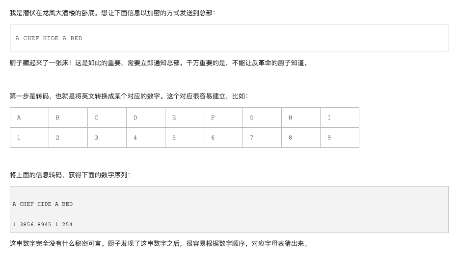
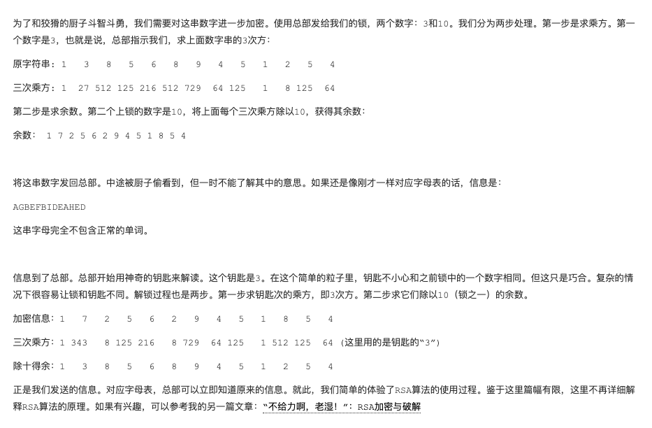
- [3] SSL 协议
可以看到，非对称加密从安全性上要强过对称加密。但天下没有免费的午餐。非对称加密的运算成本同样也比较高。为了兼顾效率和安全，SSL 协议同时使用了非对称和对称加密。它用对称加密算法来加密信息本身。但对于安全性比较脆弱的对称加密密钥，则采用非对称加密的方式来传输。
SSL 协议分为客户端和服务器端。通信的核心步骤很简单：
- 双方利用明文通信的方式确立使用的加密算法。
- 利用非对称算法通信，交换一个密钥。
- 该密钥用于对称加密算法，加密接下来的通信正文。
可以看到，SSL 协议的关键是用一个非常安全的方式来交换一个对称密钥。交换的过程会比上面的描述更加复杂一些。
- 客户发起请求时，除了说明自己支持的非对称加密算法，还会附加一个客户端随机数(
client random)。 - 服务器回复请求时，会确定非对称加密算法和哈希函数，并附上公钥。此外，服务器端还会在此次通信中附加一个服务器端随机数(
server random)。 - 客户端会产生第三个随机数(
Premaster secret)，然后利用服务器确定的非对称加密算法和公钥来加密这个随机数，再发送给服务器端。 - 客户端用自己的私钥解密第三个随机数。
- 这样，客户端和服务器端都知道了三个随机数。双方各自用商量好的哈希函数从三个随机数获得对称加密的密钥。
即使明文通信的时候，某些信息被窃听，但第三步的非对称加密通信部分可以保证窃听者无法完整的获得三个随机数。这样，窃听者还是不知道对称加密的密钥是什么。这样，对称加密的密钥就在一个安全的环境中获得了。为了进一步安全，服务器的公钥会包含在一个数字证书中发送给客户。这样，客户还可以通过数字证书来验证服务器的身份，以免服务器本身出现问题。
今年来使用越来越广泛的 HTTPS 协议就是在 SSL/TLS 协议的基础上进行通信。HTTP 协议在通信过程中要经过多重路由，很容易被窃听。经过 SSL 协议加密的信息就算被窃听，也只能被通信目的地的人解读，从而保证了信息的安全。所以，如果所访问的网站没有使用 HTTPS 协议，那么在输入银行账号和密码之类的敏感信息时，就要三思而后行了。
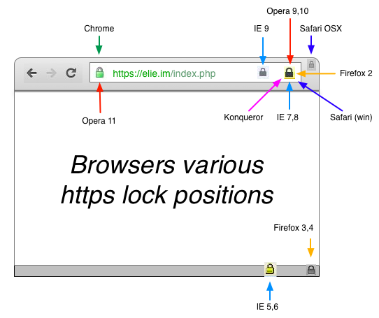